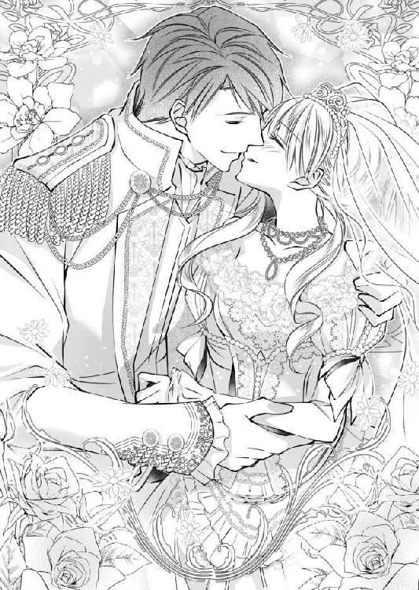

| 天然令嬢は王太子殿下に求められて焦っています。 (LUNA文庫) | |
| 宇佐川 ゆかり | |
| 天海社／LUNA文庫 (2017) | |
天然令嬢は王太子殿下に求められて焦っています。
[著者]宇佐川ゆかり
[イラスト]弓槻みあ
プロローグ
「......お兄様ったらどこに行ってしまったのかしら」
ティーナ・ヴァルターリはてくてくと王宮の長い廊下を歩いていた。
今日、初めて両親に連れられて王宮に来たティーナは、兄と一緒に王宮内を探検して回っていた。けれど、目に映るすべてが新鮮で、あちこち出歩いているうちに完全にはぐれてしまったのである。
「おうちに帰ったら、ちゃんとお兄様に言っておかないと。ティーナとはぐれちゃいけませんって」
勢いよく顎を突き上げると、その動きにつられて柔らかな金髪がふわりと宙を舞う。廊下をいつまでも歩いているのにも飽きたので、適当な扉から庭へと出てみたところだった。
（......すごく、綺麗！）
ちょうど目の前は、豪華な百合の花がたくさん植えられている花壇だった。ティーナのいる場所までむせるような百合の香りが漂ってくる。
白、ピンク、赤、黄色。ヴァルターリ家の花壇には白と黄色の百合しかないから変わった色を見るのは新鮮だ。
「あ、これ、二色なのね」
百合の花壇にそって歩いて行くと、端に植えられているのはまた違う品種のようだった。白というよりクリーム色に近い花弁の中央は、赤とピンクの中間だ。
「すごく、綺麗」
にこにことしながら、顔を寄せてみる。ふわりと漂う香りに、また気分が上昇した。
（......でも）
先ほどからあちこち歩いて捜しているのに、両親とも兄ともはぐれたままだ。
（......どうしよう......このまま見つからなかったら）
こんなに広いところだから、一人で馬車まで帰り着くことができるか心配だ。不意に心細くなってきて、じわりと涙が滲む。
「ふぇ......」
ぽろっと一度涙が零れてしまったら、もう止まらなかった。次から次へと涙が出てきて、ついには大きな声を上げて泣いてしまう。
「......どうした、迷子か」
「ひゃああっ！」
ティーナがわんわん泣きながら歩いていたら、いきなり高く持ち上げられた。
脇の下に両手を入れ、目と目が合う位置までティーナを持ち上げたのは、見たことのない少年だ。
兄と同じくらいの年齢だろうか。真っ黒な髪を短めに揃えていて、生真面目な顔をしてティーナのことを見つめている。
「お前、名前は？」
ぶっきらぼうに問われて、ティーナは唇を尖らせた。
お前は、だなんて、なんて乱暴な問いかけなんだろう。
答えてやるもんか、と抱き上げられたままぷいと顔をそむける。
ティーナは、立派なレディなのだからお前なんて呼ばれる筋合いはない。
「......困ったな。名前がわからないんじゃ、どこに連れていけばいいかわからないし。ステファンに任せるか。あいつ、子どもの扱いが上手いからな」
目の高さまでティーナを持ち上げたまま、少年はそう言う。急に出てきた兄の名前に、今までわんわん泣いていたのもあっさりと忘れて、ティーナは素早く反応した。
「お兄さんが言ってるのが、ステファン・ヴァルターリのことならティーナのお兄様よ」
「そうか......なるほど。そういや、今日妹と一緒に来ると言っていたな」
伯爵家の嫡子である兄のステファンは、王太子殿下の遊び相手としてしばしば王宮に呼ばれている。
たぶん、この人は兄と一緒に王太子殿下のお側に仕えている遊び相手仲間なのだろう。今まで伯爵家に遊びに来たことはないけれど。
持ち上げていたティーナを床の上に下ろしてくれた少年は、ぶっきらぼうな口調で言った。
「それなら、ステファンのところまで連れていってやる」
「うん」
はぐれないようにしっかりとティーナの手を握って、建物の中に戻った少年は、迷うことなく奥の一室を目指しているようだ。
どこに行くのかなと思っていたら、向こう側からばたばたと兄のステファンが走ってくるのが見えた。
「ティーナ、お前どこに行ってたんだ！ アレクシス様、妹をありがとうございます！」
焦った様子の兄は、ティーナを連れてきてくれた少年に向かって頭を下げた。ひょっとしたら、少年は兄より身分が上なのかもしれない。
「お兄様のところまで連れてきてくださってありがとう」
少年の方へ振り返り、ティーナは精一杯の威厳を込めて言った。
「どういたしまして」
「助けてくれたから、お友達になってあげてもいいわ。だから、お名前教えて？」
「俺？ 俺の名前はアレクシス・ノルデンシェルド。そうか、友達になるか」
笑った少年は、ティーナの方へと身を屈めてぐしゃぐしゃと頭を撫でてくれた。
アレクシス・ノルデンシェルド――それが、この国の王太子殿下の名前であることをティーナが知るのは、それから三十分後のことだった。
第一章
ティーナは、手にした書類の束をとんとんとデスクに叩きつけて綺麗に揃えた。
王妃の側で書類仕事を手伝うのは、王妃付きの侍女達持ち回りの仕事だ。専門的なことに手を貸すのではなく、あくまでも雑用程度だけれど。
「ティーナ、その書類をアレクシスに届けてくれるかしら。それと、そろそろ休憩を入れるように伝えてちょうだい」
「かしこまりました」
優雅な仕草で一礼し、ティーナは静かにその部屋を後にする。
ティーナ・ヴァルターリは今年十八歳になった。
十四歳の時から、恐れ多くも王妃陛下の侍女として王宮に出仕することを許されている。
ティーナの兄であるステファンは、王太子アレクシスの友人だった。ティーナは、王宮に出入りする兄に幼い頃からついてきているうちに、行儀見習いに来ないかと声をかけてもらったのだ。
侍女といっても下働きではなく、どちらかと言えば王妃の話し相手やちょっとした雑用係という役割の方が大きい。
それともう一つ、侍女達に与えられているのは王太子であるアレクシスの身の回りの世話だった。
なぜかその役はティーナに回ってくることが多く、侍女仲間達は「いいなあ、アレクシス様のお世話係」なんて言うけれど、ティーナ自身にはあまりその自覚はない。
王妃の仕事部屋から少し離れたところにアレクシスの仕事部屋がある。成人してからは、未来の国王として、アレクシスが任される政務もかなり多くなっているのだ。
「アレクシス様、こちらの書類の確認をお願いします。それと、そろそろ休憩になさってはいかがかと王妃様が」
ティーナが差し出した書類を受け取ったアレクシスは、それを机の上に置いた。
アレクシスは今年二十二歳になった。黒い髪を短めに整えた彼は、外で身体を動かすことを好むということもあり、がっしりとした肉体の持ち主だ。
意志の強そうな光を宿す黒い瞳に、形のよい鼻。唇は、時々皮肉めいた笑みの形になることもあるが、おおむねにこやかな好青年だ。
当然、王宮に行儀見習いに来ている侍女達の人気も高く、ティーナがうらやましがられるのはそこにも理由があった。
「休憩したら目を通す。紅茶がほしい」
「紅茶ですね。かしこまりました」
休憩用のお茶と菓子を用意しながら、ティーナは思い出したように口にした。
「あ、そうそう......今度のお茶会なんですけど、私の友人も来るんです。声をかけていただけませんか」
「お前の友人？」
「ええ。アレクシス様に声をかけてもらったら、皆喜ぶと思います」
わざわざティーナがこんなことをしているのも、王妃に頼まれているからだ。兄と一緒にしばしば王宮を訪れていたティーナにとっては、アレクシスは幼なじみでもある。だから王妃も頼みやすいのだろう。
アレクシスは根が真面目なのか、とにかく浮いた噂がない。
二十二歳の誕生日を迎えても、女性に関する噂が何一つないのでは心配だ、と友人を引き合わせるように頼まれているのだ。
（アレクシス様には、幸せになっていただかないといけないものね）
十八歳になったティーナにも、浮いた噂は何一つないのだが、自分のことは完全に棚に上げている。まずはアレクシスに幸せになってもらう方が先なのだから。
「......面倒だな」
額にかかった前髪を、うっとうしそうに払いのけながらアレクシスは言った。
「面倒なのはわかりますけど......アレクシス様、ちゃらちゃらするのはお好きではないですもんね。でも、一言かけていただけたら皆喜ぶと思うので......ダメ......ですか？」
話の間もティーナの手は休むことなく動いていた。沸いた湯を温めたティーポットに注ぐ。
お茶が蒸れるのを待っている間に、部屋に用意されていた焼き菓子の中からクッキーとパイを選んで皿に盛りつける。それらをテーブルに運べば支度は完了だ。
「どうせ母上の差し金だろ。そろそろ縁談をって――最近うるさいから」
「そういうわけでもないんですけど。実際、アレクシス様って浮いた噂ありませんよね」
「それは、ティーナだって同じだろ」
「私に浮いた噂があったら、困ります！ 王妃様の侍女がそんなちゃらちゃらしてたらいけないんですよ！」
ぶんぶんと手を振って主張するティーナに、アレクシスはじっとりとした目を向けた。
「......俺の気も知らないで」
「何か言いました？」
「いや......なんでもない」
むすっとした顔で、アレクシスはティーナがお茶の用意をしているテーブルへと移動してきた。
「お前も付き合え――どうせしばらく暇だろ」
「ありがとうございます」
アレクシスは甘いものには目がないほうだ。午後、こうやって甘いものを食べながら一息いれるのが好きらしい。
週に三回か四回はこの時間にティーナがここに来ることになっているけれど、アレクシスのお茶に付き合わされるのもいつものことだった。
最初、アレクシスにお茶に誘われた時に断って王妃のもとに帰ったら、あまり長時間でなければ付き合っていいと言われた。
たぶん、仲のよい友人をアレクシスに売り込む役をティーナに期待しているのだろう。
「......やっぱり、王宮のお菓子職人が焼くクッキーはおいしいですねぇ......」
「......ティーナは、食べている時は本当に幸せそうな顔をするんだな」
「アレクシス様だって、甘いものを食べている時は幸せそうな顔になりますよ？ すっごいほわほわした顔」
「ほわほわってどんなだよ」
アレクシスが頬に手を当てる様子がおかしくて、くすくすと笑ってしまう。
ティーナの日常は、そうやって過ぎていくのだった。
侍女として王宮に上がっているティーナではあるが、貴族の令嬢としての立場もある。
その夜は王宮で開かれる舞踏会に出る必要があったから、自分の部屋で身支度に忙しかった。
今日は実家から侍女が派遣されてきて、支度を手伝ってくれる。
選んだドレスは目の色と同じ青だ。フリルとレースがふんだんにあしらわれていて、細い腰を強調するサッシュは黄色。スカートには銀糸と金糸で刺繍が施されている。
ふわふわの金髪をいかすように工夫して髪を結い、ダイヤモンドの飾り櫛で留める。イヤリングと首飾りは揃いのダイヤモンドとサファイアをあしらったもの。
「うん、悪くないわね。ありがとう！」
「いえ、お嬢様はいつもお綺麗でございます」
「それなら、いいんだけど......」
侍女が誉めてくれても、正直なところちょっと不安だ。
でも、その不安を見せないようにして、ティーナは友人達と一緒に王妃の部屋へと向かった。
「まあ、今日は皆とても可愛らしいわ。楽しんでいってね――アレクシスも、あなた達の中から誰かを選んでくれたらいいんだけど」
その言葉に、王妃の前だというのにきゃあきゃあと悲鳴が上がる。
今、ここにいるのは王妃付きの侍女として王宮で行儀見習いをしている未婚の令嬢ばかり。アレクシスの名前が出れば、一斉に浮き立ってしまうのもしかたのないところだろう。
「......ティーナ、殿下に引き合わせてくれない？」
ティーナにこっそりそう頼んできたのは、ヴィオレッタだった。
ティーナは兄という伝手があってアレクシスとは幼なじみだし、彼と顔を合わせる仕事を与えられる機会も多い。けれど、同じ王妃付きの侍女でもアレクシスと顔を合わせる機会が少ない少女もいる。
そういった少女達は、今夜のような時にアレクシスに近づく機会を得るしかないのだ。
アレクシスと比較的親しく口をきくことのできるティーナは、しばしばこうやってアレクシスと引き合わせてほしいという頼みを受ける。
「いいわよ。殿下もきっとお喜びになるだろうし――友人は多い方がいいっておっしゃってたもの」
「やあね、友人ではなく恋人がいいわ」
「それは、いつ聞いても逃げられてしまうのよねぇ......」
何度かアレクシスに友人を紹介したり、今夜のような席で引き合わせたりしているけれど、今のところ誰もアレクシスの心を掴んだ気配はない。
こういったことは片方の意思だけではどうしようもないから、ティーナがアレクシスを責めるような筋合いの話でもないけれど。
「あら、引き合わせてくれたらあとは自分でどうにかするわ」
ヴィオレッタは、自信満々にそう言った。彼女はたしかにものすごい美人だから、アレクシスの心を掴むことができるかもしれない。
今日の彼女は、華やかなピンクのドレスを身に着けて、とても洗練された雰囲気だ。
（ヴィオレッタなら、アレクシス様のお眼鏡にかなうかも）
ヴィオレッタは地方から行儀見習いに出てきたばかりで、王宮で開かれる舞踏会に参加するのは今日が初めてだ。
アレクシスも、彼女を気に入ってくれたら、ティーナも肩の荷を下ろすことができる。
アレクシスには絶対に幸せになってもらわないといけないのだ。
彼と初めて会った日に、「友人になってあげる」と偉そうに言ったティーナの言葉を、彼は笑って受け入れてくれた。
それから兄と一緒に何度もアレクシスと顔を合わせる機会はあったし、親しく話をすることも許された。
ステファンはちゃらちゃらと女の子の間を飛び回っているから、違う意味で心配だけれど、真面目なアレクシスには幸せになってほしい。
そんなティーナの思いを知っているのかいないのか、王妃は目の前に集まった少女達を見回して、満足そうに微笑んだ。
「本当に今日は皆、とても素敵よ。では、そろそろ行きましょう」
王妃の後に従って、宴の会場となっている広間に入る。そこはもう多数の人で賑わっていた。
あとは好きにするようにと王妃から合図されたのを受けて、侍女達はそれぞれの目的地に向かって散っていく。
「早く、早く！ ほら、アレクシス様よ」
ちょうどアレクシスの入場が告げられたところで、ヴィオレッタはティーナの手を引っ張る。
「そんなに焦らなくても、アレクシス様は逃げないわよ」
「いいえ、だめよ。だって、ぐずぐずしていたら、他の人に取られてしまうもの」
取られてしまうという表現もどうかと思うけれど、ヴィオレッタは今日が初めての舞踏会だから、気がせいているのかもしれない。
ちょうどアレクシスも一人だし、今引き合わせておいた方がよさそうだ。
「アレクシス様！」
ティーナが呼び止めると、アレクシスはこちらへと振り返った。
「ティーナか......どうした？」
「お友達の、ヴィオレッタ・トゥエリです。今日、初めて王宮の舞踏会に参加なので、アレクシス様に紹介しようと思って」
アレクシスが眉間に皺を寄せるのは見なかったことにして、ヴィオレッタを前に押し出す。それからすかさずその場を離れた。
（......アレクシス様が、ヴィオレッタと仲良くなってくれたらいいんだけど）
アレクシスが幸せになるのを見届けないと、ティーナもなんとなく落ち着かない。
踊る気にはなれなかったから、ティーナは真っ先に飲み物を置いている一角目指して進んだ。
「ティーナ、君も来ていたのか」
「ヨアキムさん、こんばんは。今日は、王妃様のお供なんです」
声をかけてきたのは、兄と同じようにアレクシスの側仕えとして王宮に上がっているヨアキム・ハスローだ。
伯爵家の嫡男であるヨアキムは、侍女仲間達の間で、「麗しのヨアキム様」として知られている。
優しげな茶のまなざしに細身の体躯。中性的な容姿の持ち主であるヨアキムは、詩人のようと言えばいいのだろうか。物腰も柔らかくて、話をしていても気持ちのいい相手だ。
「そう言えば、お会いするの、お久しぶりですね」
比較的アレクシスと会う機会の多いティーナであるけれど、このところヨアキムとはほとんど顔を合わせていなかった。
「......そうだね。ちょっといろいろあったから」
「......あ」
そう言われて思い出した。
ヨアキムは、子どもの頃から想っていた令嬢と婚約していたけれど、相手の心変わりでつい先日破談になったということを。
ごめんなさい、と詫びの言葉を口にしかけたティーナの手をヨアキムは取った。
「その件については、もういいんだ。それより――一曲、踊ろうか」
「踊ろうかって言うわりに、もう手を握ってますよね？」
「ティーナなら、断らないだろ？」
「相手がヨアキムさんだもの。断ったりはしないけど、手を取るのがちょっと早いかな......なんて」
婚約していた頃も、ヨアキムはティーナの相手をしてくれた。
兄とも仲のよい友人であるし、ヨアキムと一緒にいるのは気楽で好きだ。
お互いにそこに恋愛感情がないというのもよくわかっているし、そういった展開を期待したことも一度もないけれど。
ティーナの手を取って踊りながら、ヨアキムが視線を巡らせる。
「......アレクシス様は、やっぱり囲まれているね」
彼の視線の先では、アレクシスがヴィオレッタをはじめとした令嬢達に取り囲まれていた。彼女達の陰に隠れてしまって、アレクシスの表情をうかがうことはできない。
けれど、令嬢達が彼の注意を引こうと懸命になっているのは、ここからでも十分にわかった。
「アレクシス様が、なかなか決まった女性を作らないからよ。私、お友達を引き合わせたりしているのに」
「おやおや」
ティーナの言葉に、ヨアキムはにやにやした。それから、意味ありげに、アレクシスと令嬢達がいるあたりに視線を向ける。
ティーナが彼の視線を追いかけたら、令嬢達を追い払ったらしいアレクシスがじーっとこちらを見つめていた。
「アレクシス様、ヨアキムさんに何かご用なのかしら」
「――違うと思うよ」
「違うって何が？」
ヨアキムが何を言いたいのか、さっぱりわからない。首を傾げているうちに、ヨアキムとのダンスは終わってしまった。
「それじゃ、また後で」
ティーナをフロアの外へと連れ出してくれたヨアキムは、にっこりと笑って行ってしまう。今度こそ飲み物を取ろうと思って向きを変えたら、目の前にアレクシスが立っていた。
「ヨアキムはもう行ったな。今度は俺の番だ」
今度はアレクシスに腕を取られてフロアへと連れ戻されてしまう。結局、飲み物は手に取ることができないままだった。
「あの、私、一曲終わったばかり――」
「ヨアキムとは踊れても、俺とは踊れないと？」
「そういうわけじゃ、ないんですけど」
せめて飲み物休憩くらいは取りたかったのに。急にアレクシスの口調が変わったから、危険を察知して口を閉じた。
どうしてアレクシスはこんなに機嫌が悪いんだろう。
「アレクシス様、何かありました？」
「お前、なんで俺にあの娘を引き合わせた？」
あの娘ってヴィオレッタのことだろうか。なんだか、アレクシスはヴィオレッタが気に入らないみたいだ。
（アレクシス様って......ひょっとしたら、うんと高望みなんじゃ）
この国の令嬢なら、彼に声をかけられて断ったりしないはずだけれど......。
「なんでってヴィオレッタに頼まれたからですよ？ 今日、せっかくの機会だからアレクシス様に紹介してほしいって。だめでした？」
「お前は余計なことをしなくていいんだ」
余計なことって......どうしてそんなことを言うのだろう。
王妃も心配しているから、ティーナも頑張って友人を引き合わせているのに。
「余計なことをして、ごめんなさい」
ちょっとむっとしたけれど、結局、そう謝罪するしかなかった。
第二章
王宮で行儀見習いをしているティーナのところに兄のステファンがやってきたのは、それから一週間後のことだった。
なぜかステファンは女性の間での人気が非常に高い。たしかに背は高いし、見事な金髪と青い瞳は物語の中の王子様みたいかもしれない。
けれど、彼の評価は「ちゃらちゃらした男」だ。あちこち令嬢の間を渡り歩いては、手を握って誉め言葉をささやく。ちゃらちゃらしているという程度の評価で落ち着いているのは、手を握ってせいぜい頬に口づけるくらいのことしかしないからだ。
「お前、ヨアキムのことどう思う？」
「どう思うって言われても......ヨアキムさんは、ヨアキムさんでしょう？」
ヨアキムとは、この間の舞踏会で久しぶりに顔を合わせたばかり。急にそんなことを聞かれても困る。
「そのヨアキムさんってどういう感情なんだよ」
「うーん......特に、何も......お兄様のお友達だし......私にも優しくしてくれるし......って感じかしら」
「家族みたいな、というのが一番近いか？」
「そうね、お兄様に対して思うのとほとんど同じかも」
「......そうかあ。まあそうだろうな。ヨアキムの方も、そういう感じみたいだし」
半分独り言みたいに口にしたステファンは、大きく息をついた。
「もし、お前さえよければ、結婚を考えないか――と、ヨアキムに言われたんだ。父上に話をする前に、お前の意見も聞きたいって」
「......考えたことなかったわ」
正直なところ、ヨアキムと結婚すると言われてもぴんと来ない。
「ちょっと考えてみるか？ お前の縁談もなかなか決まらないだろ。いつまでも王宮で行儀見習いってわけにもいかないしさ」
「......わかったわ。考えてみる」
たしかに、いつまでも王宮で行儀見習いをしているわけにもいかない。
話を終えた兄を見送り、ティーナは仕事へと向かった。
今日の王妃は午後から病院の視察に行く予定だ。動きやすい服を提案できるように準備しておいた方がいいだろう。
王妃が無事に視察先へと向かえば、同行する侍女以外はしばらく休憩の時間が与えられる。
（今のうちに、少し外の空気を吸ってこようかしら）
先ほど、兄から提案された話も、真面目に考えた方がいいかもしれない。
（ヨアキムさん......どうなのかしら。お父様は、なんておっしゃるかしら）
ヨアキムに対して、「すごく好き！」とか「顔を見ただけでどきどきしちゃう！」といった、侍女仲間達が素敵な男性を見かけた時にきゃあきゃあ騒ぐような感情は持ち合わせていない。
でも、ティーナが誰かに対してそんな感情を持ったことがあるかというと、今のところ一度もない。
「ティーナ、アレクシス様がお呼びよ」
百合の花壇をぼうっと眺めているティーナのところに、他の侍女仲間が迎えにやってくる。今日は、アレクシスの用事はないはずだったのにと思いながら、ティーナは指定された場所へと向かった。
「お呼びと聞いたのですが、ご用は何でしょう？」
アレクシスの部屋に向かおうとしたら、なぜか廊下に出て待ち構えていた。用事を片付けるのに廊下で待ち構えている必要があるのかと、ティーナは首を傾げる。
「......ご用って......お前、ずいぶんのんきだな」
「ひゃあっ！」
やけに低いアレクシスの声がしたかと思ったら、いきなり腕を掴んで引き寄せられた。身体にアレクシスの両腕が回されて、ティーナの口からは変な声が上がる。
「あのっ......ア、アレクシス、様――」
彼の身に着けている上着に、ティーナの顔が押しつけられる。ふわりと漂った爽やかな香りは、最近人気の調合師が調合した香水だ。
（......なんで）
一瞬その言葉が頭を過ぎったけれど、それ以上は追及することができなかった。
自分の顔がアレクシスの胸に密着しているという状況。身体に回された強い腕の感覚。頭の中が真っ白になってしまって、何も考えることができない。
「......ヨアキムから求婚されたというのは本当か」
「ふぁ、求婚というか......そんなん、じゃ」
まだ、求婚以前の段階だ。ヨアキムから兄に、ヨアキムとティーナの縁談を考えてみないかと打診があっただけのこと。
父に話を持っていくと、正式なものになってしまうから、その前段階で止めたというのが正解だ。
「――ヨアキムと結婚するつもりか」
「だ、だから――そんなんじゃ」
どうしてアレクシスはこんなに怒っているんだろう。その理由が、ティーナにはわからない。
ただ、抱きしめられたままうろたえていたら、顎に手をかけて顔を持ち上げられた。
「アレクシス様、何......なん、ですか」
こんなにも間近からアレクシスの顔を見たことがあっただろうか。
背中に回された腕には、痛いくらいに力が込められている。
そうして互いの呼吸が混ざり合いそうなほど近い位置から見つめ合っていると――不意に心臓がどきどきとし始めた。
「やっ......あっ......」
今まで覚えたことのなかった羞恥心が一気に襲いかかってきて思わず目を閉じる。
けれど、それが失敗だったということを次の瞬間思い知らされた。
「んぅ......あっ......」
唇が重ねられて、ティーナは動揺した。どうして、アレクシスはこんなことをするのだろう。
「あふっ......」
何度か触れては離れるだけのキスを繰り返していたかと思ったら、今度は下唇が彼の唇に挟み込まれる。唇越しに噛まれて、甘い感覚が走り抜けた。
「んっ......ふっ......」
ティーナの唇からは、次々に甘い吐息が零れ落ちる。角度を変えて食まれ、彼の唇に挟まれた下唇に舌が這わされて、またティーナは呻いた。
「やぁっ......はっ......」
キスってこんなに生々しいものだなんて知らなかった。
今までぼんやり想像してきたキスといえば、唇を触れ合わせるだけのもの。
こんな風に下唇を挟まれたり、吸い上げられたりするなんて考えたこともなかった。
ティーナが逆らわないのを見て取ったアレクシスは気をよくしたらしい。今度は、強引に唇の間に舌を割り込ませてくる。
「やぁっ、んぁっ......あっ......あぁんっ......」
ぬるりとした熱い舌に驚愕して、ティーナの舌は口内の奥の方に逃げ込んでしまう。
けれど、アレクシスの舌は口内のいたるところをまさぐり、縮こまったティーナの舌を探り当てた。
「ふぁ......あ......あん......あぁん......や、あっ」
首を振って逃れようとしても、しっかりと後頭部を支えられているから逃げることもできない。
背中をしならせて少しでも距離を開けようとしたら、強引に背中を引き戻される。
アレクシスの舌で舐められると、腹の奥の方がなんだかぞくぞくしてくる。それに、胸の頂もちりちりとし始めて、ティーナはますます混乱してきた。
「やっ......だめっ......」
自分がやっかいなことに巻き込まれそうな気がして、慌てて首を振る。アレクシスを押しやろうとしたけれど、彼はティーナを逃がしはしなかった。
背中に回された手にますます力が込められて、口内を探る舌の動きが激しさを増す。舌の絡み合う水音がした。
「ふぁ、あっ、あぁん」
いつの間にか、ティーナの舌は逃げ回るのをやめていた。こわごわと絡められる舌に応え始めていて、息が乱れていくのも気にならなかった。
アレクシスの身体を押しのけようとしていたはずの手は、しっかりと上着を握りしめている。
「んんっ......」
アレクシスの手がティーナの髪を優しく撫でる。唇が離れていくのが物足りなくて、不満の声が漏れた。
「ティーナが悪い。俺の気持ちには全然気がつかないから」
「......なんのこと......？」
ぼうっとしたまま、ティーナはアレクシスを見上げる。ふと、自分が今いるのがどこなのかを思い出して、悲鳴を上げた。
「やだっ......私ったら......！」
いったいどのくらいの時間が過ぎたのだろう。
廊下でこんなにも長々とキスをしてしまうなんて。誰かが通り過ぎていたとしても、絶対気がつかなかった。
真っ赤になったけれど、アレクシスはまだ逃がしてくれるつもりはなさそうだった。
ティーナの身体越しに扉を開き、そのまま中に押し込む。
「......あっ」
そこがどこであるのかに気がついて、ティーナは身を震わせた。
いつも彼のためにお茶を用意したり、王妃に頼まれたものを届けたりしているのは隣の部屋。
ここは、アレクシスの寝室だ。時々アレクシスを起こすよう頼まれるから、入ったことはあるけれど、こんな時間に入るのは初めてだった。
「やっ......あのっ......部屋、間違え――」
「間違えてなんかない」
「でもっ！」
続くはずだった言葉は、もう一度キスされたことによって完全に封じられてしまった。
「んぅ......」
何度も何度も唇が触れ合わされる。押しのけようとしていたはずなのに、気がついたら彼の腕に身体を預けている。
こんなにもキスが気持ちいいものだなんて知らなかった。アレクシスの身体にもたれるようにしていたら、いきなり膝の裏に腕を差し込まれてそのまま抱き上げられる。
「アレクシス様っ？」
アレクシスの耳には、ティーナの声は届いていないみたいだ。
ベッドの上に投げ出され、アレクシスがのしかかってくる。両肩をベッドに押しつけられて、今自分が置かれている状況をようやく理解した。
「やだ、だめ......だめですってば......！」
いやいやと首を振っても、アレクシスを煽ることにしかならないらしい。肩を掴む彼の手にますます力が込められただけ。
「――何がだめ、なんだ？」
上から見下ろしてくるアレクシスが怖い。じわりと目に涙を浮かべたけれど、彼は気にした様子も見せなかった。
「だって......こんなの、おかしい......！」
掴まれた肩が痛かったけれど、身を捩ってアレクシスから逃れようとした。けれど、肩を掴む彼の手は強くて、逃げることなんてできない。
今度は首筋に唇が触れる。とたん、ぞわりとした感覚がつま先まで走り抜けた。
「やぁんっ......あぁんっ」
自分の身体は、絶対におかしい。
だって、靴を履いたままの足はばたばたしている反面、身体からは力が抜ける。
「やっ......だって......だって、あぁんっ！」
喉元の薄い皮膚に彼の唇が触れる度に、甘美な感覚が広がっていく。その感覚が何なのかよく理解できないままに、ティーナはもがいた。
「ひ――あぁぁっ！」
のけぞらせた喉に唇が触れたかと思ったら、小刻みに舌を動かされて妙な声が口から上がる。
「やぁっ......アレクシス様っ、やっ、だめぇっ」
どうしてこんな風になってしまうんだろう。唾液で濡らされた喉がひやりとして、新たな涙が滲む。
恋愛経験があるわけではないけれど、こういうことは恋人同士がすることのはず。アレクシスとティーナの間に起こるなんて間違ってる。
「あぁ......お願い、だめ......」
言葉では拒んでいるけれど、身体に力が入らなくて彼の思うままになされてしまう。着ている服の胸元にアレクシスの手が忍び寄った。
上がりそうになった声を、唇を噛むことでこらえる。身体が震えるのまでは止めることができなかった。
「そんな顔をするな――悪いことをしてるような気になってくる」
「わ、悪いこと......です......！ 悪いことに決まってるじゃないですか！」
じわりと目に涙が浮かぶ。アレクシスの顔を見たくなくて、ぎゅっと目をつぶったら、不機嫌な彼の声がした。
「......すぐに、そんな口をきけないようにしてやるから」
「や、だめっ......だめって......私、言いましたよね？」
服の上から柔らかな膨らみが彼の手に包み込まれる。そこから広がるやんわりとした愉悦にまたティーナは脅えた。
「ん、んんんっ」
こんなの間違ってるから――だから、声を上げてはいけない。
けれど、懸命に結んだ唇は、胸を掴む手に力が込められたら、簡単に解けてしまった。
「はっ......ぅ......あ、あぁっ」
大きな手がゆったりと乳房を揺らす。それだけなのに、なじろうとしていた言葉も消え失せる。
「だめ......やっ......あっ、はぁんっ」
「それじゃ、だめなのかだめじゃないのか、よくわからないな」
「......意地悪」
間違ったことをしていると頭では理解しているのに、気持ちの方がついてこない。
ぷいと顔をそむけて、アレクシスの顔から自分の顔を隠す。アレクシスが首筋にキスしてきて、また甘い声が漏れた。
円を描くように胸を揺らされて、こらえきれずにシーツを掴む。
震えるティーナをなだめるように、額にキスが落とされる。シーツと背中の間に手が潜り込んできて、そのままボタンを外された。
「やだっ......あっ、あぁんっ」
引き下ろされた衣服を元の位置に戻す間もなかった。あっという間に着ていた服が肩から滑り落とされて、両手が袖から抜かれてしまう。
「んぁっ、あっ、あぁぁっ！」
レースの下着に覆われた胸に、アレクシスの顔が近づいた。柔らかな双丘の谷間に彼の顔が埋まる。
そんなところに、顔を埋められたことなどあるはずもなくて、ますます混乱しただけだった。
「やだっ、だめっ......だめですってば――！」
押しのけようとするけれど、そこに舌を這わされれば、身体から力が抜ける。どうしようもなくて、両手をシーツの上に落とした。
「あぁっ！」
硬くなっている胸の頂にアレクシスの手が触れた。下着の上からその場所を捏ね回されて、ティーナは身悶える。
そこを弄られる度に、どろどろとしたものが下腹部へと流れ落ちていって、脚の先まで痺れるみたいだ。
「はっ......んぁ......胸......い、やぁ......」
いやいやと首を横に振るのもアレクシスは気にしていないようだった。
ティーナの唇からはひっきりなしに色めいた声が上がっていて、与えられた快感を受け入れていることを如実に表している。
「――あぁ」
乱れたスカートの中にアレクシスの手が潜り込み、半開きになった唇からまた声が上がった。腿の内側と外側を交互に撫でられて、お腹の奥が引きつれるような感覚に陥る。
「ふぁっ......あっ、あっ......あぁっ......ん」
落ち着きなく膝を擦り合わせようとするけれど、間にあるアレクシスの手をいたずらに締め付けるだけ。
アレクシスは、さらに奥の方へと手を進めてきた。腿の付け根をなぞられて、反射的に肩が跳ね上がる。
「んぅっ......んっ......あっ、あぁんっ！」
なんだかますますいけないことをしているような気がしてくる。思わせぶりに腿の付け根を撫で回されると、すぐ近くにあるあらぬ場所が甘く疼く。
「ティーナは可愛いな――気持ちいいって顔してる」
「知らない......もの......」
そんなこと、言わないでほしい。羞恥に睫が震えて、どうしようもなくなってくる。ティーナの頬に、額に、キスが落とされて、最後に唇が触れ合わされる。
アレクシスにキスされる度に、胸の鼓動は高まる一方だった。
――なぜ。
頭の後ろの方から押し寄せてくる、そんな疑問からは目をそらす。
「――あぁぁっ！」
ついに秘めておくべき場所に彼の手が触れた。とたん、すさまじい刺激が走り抜けて、背中が弓なりになった。
くちゅりと音がして、下着まで濡れていることを知る。アレクシスは、そのまま何度も指を往復させてきた。
「はっ......ふっ......はっ......あっ、あっ、あぁぁあんっ」
指の動きに合わせるように、ティーナは喘ぎ声を上げた。濡れた場所を指が滑るだけで、濃厚な喜悦が広がっていく。
本能的に身体をくねらせたら、アレクシスはドロワーズを留めている紐に手をかけた。紐が緩められ、中に大きな手が潜り込んでくる。
「ひぁっ......あっ......！」
反射的に膝を閉じようとしたけれど、すでにその場所には彼が割り込んでいた。脚を閉じることもできずに、次に与えられる刺激を待ち受けることしかできない。
薄布の上から弄られた場所に彼の指が触れた。
「こんなに濡れて、ちゃんと感じてくれてたんだな」
アレクシスがほっとしたように言うけれど、反射的に頬が熱くなる。
言葉のかわりに、アレクシスの上着をぎゅっと掴んだ。濡れた花弁の間を優しく指が滑り、甘い声が上がる。
「んっ......くっ......あっ......あんっ......」
溢れる蜜をまとうように花弁の間で指を蠢かせたかと思ったら、今度はそっと上にあるもっとも敏感な場所に触れてくる。
「あぁんっ！」
触れられて、頭の先まで頭が真っ白になるような快感が走り抜けた。思わず逃げを打つ身体を押さえ込み、アレクシスは何度もその場所に触れてくる。
指はそっと触れては離れ、花弁の間を滑り、指先に愛蜜をまとわせてはまた戻ってくる。
「いっ......あっ、あっ、はぁんっ！」
自分の身体に起こる変化が信じられない。首を振り、与えられる愉悦をなんとかやり過ごそうとする。
「アレクシス様っ......いやっ、やっ......あぁあっ！」
必死に訴えるけれど、彼の耳にはその訴えは届いていないみたいだった。
今までさほど意識したことのなかった小さな器官だというのに、送り込んでくる快感はすさまじいものだ。
蜜をまとわせた指がくるくると動く度に、足先がシーツを描く。身体がどんどんふわふわしていって、このままいったらどうなるのかと怯えた。
けれど、内面の怯えとは裏腹に、身体は貪欲に快感を追う。意識がふわふわと上昇していって、閉じた瞼の裏でいくつも光が点滅した。
「やっ、あ、あ、ああぁっ！」
びくびくっと全身に震えが走って、頭の中が真っ白になる。緊張していた全身から力が抜けて、シーツの上に身体を投げ出した。

今まで知らなかった濃厚な法悦に、ティーナの目からぼろぼろと涙が落ちた。顔を隠すこともしなかったから、眦から頬を伝ってシーツの上にまで流れ落ちる。
急に恐怖が押し寄せてきて、アレクシスの胸に両手をついて突っぱねようとした。
「ティーナ」
「もっ......や、いやっ、やっ、なのっ」
自分でも馬鹿みたいだと思うけれど、子どもみたいに泣きじゃくることしかできない。
慌てた様子のアレクシスが、指で涙を拭おうとするけれど、ティーナは激しく首を振ってその手を拒んだ。
「もうっ......もう、しないで！」
「ごめん、俺が悪かった――もう、しないから」
アレクシスがおろおろとしているのもわかるけれど、涙は止まらなかった。ティーナの背中に手がかかり、そのまま上半身を起こされる。
先ほどボタンを外したアレクシスの手が、引き下ろしたシュミーズを戻し、外したボタンをきちんと留めてくれた。スカートの中に潜り込んできた手は、ティーナが上から手で押さえる。
アレクシスの顔は見られないまま、もぞもぞとドロワーズを元の位置に戻した。
どうして、こんなことになっているのだろう。気持ちの方がついてこない。
アレクシスのことは、けっして嫌いではない。
王太子としても、兄の友人としても、素晴らしい人だと思っている。だから、彼に幸せになってほしくて、友人を引き合わせてきたのに。
そんな彼が、ティーナにこんな真似をするなんて、考えたこともなかったのだ。
「――帰ります」
アレクシスの顔を見ることができなくて、顔をそむけたままもごもごと言う。
けれど、腕を掴んで引き戻された。
「行くな。ティーナの気持ちを無視したのは謝る。俺が悪かった――だから、もう少しこのままここにいてほしい」
それは、命令なのだろうか。理由もわからないまま、ティーナは彼の言葉に従った。
アレクシスは、ティーナの両肩に手を置いて、正面から覗き込んできた。
「ヨアキムとの縁談はどうなってる？」
「どうなってるも何も......聞いたばかりだし......そもそも正式なお話でもないし......」
ヨアキムが婚約者にふられたのはティーナも知っている。
落ち込んだ彼を屋敷に招いて、兄が慰めていたことも。幼い頃から婚約していて、ヨアキムは彼女に真剣な感情を持っていたそうだ。
ティーナに縁談を打診してきたのも、深い愛情があるからというよりは身分も年齢も釣り合っているからだろう。そこに付け足すとすれば、子どもの頃からの知り合いだからお互い気心が知れているということくらいか。
真面目に考えようとは思っていたけれど、まだ始まってすらいない話だ。
（アレクシス様の顔、見ることができない......）
兄の幼なじみで、仕えるべき相手。
そんな対象でしかなかったから、急に変わってしまったアレクシスが少し怖い。
ベッドの上にぺたりと座り込み、乱れた髪を意味もなく撫でつけていたら、アレクシスがティーナの両肩を掴んだ。
「今、俺が焦りすぎたのは謝る。俺はティーナが好きだ。だから、俺と結婚することを真面目に考えてくれないか――い、今のは......その......気持ちが先走りすぎたというか」
自分でもいたたまれなくなったようで、アレクシスはもごもごと詫びの言葉を口にした。
「......ティーナの気持ちを無視したのは悪かったと思っている......」
ティーナがじっと見つめると、見つめられているのに気がついたようで、アレクシスの頬にわずかに血の色が上る。
「縁談が出ていると聞いたから......つい、焦った」
「......ええと。ごめんなさい。私......よく、わかりません。考えたこともなかったし」
アレクシスにはできるだけ忠実でいたいと言葉を探す。今、アレクシスにどんな感情を持っているのか――けれど、上手く言い表すことはできなかった。
「そうだろうな。自分の友人を次から次へと俺に引き合わせようとしてくるくらいだし」
アレクシスが嘆息して、二人の間にあった緊張感が少し薄れたような気がした。
「あ、あれは......頼まれたから、で......」
もごもごと言い訳をしたけれど、言われてみれば、ティーナの言動はアレクシスに対してちょっとひどかったかもしれない。
王妃からも「王太子の妃によさそうな相手がいたら引き合わせてほしい」と頼まれていたし、アレクシスに幸せになってほしかったから、全力で素敵な令嬢を紹介してきたつもりだったけれど。
「......でも、私......本当に私でいいのか......」
ティーナはうろうろと視線をさ迷わせる。
王宮での行儀見習いもそれなりに長いから、アレクシスの妃になるということが、どんな立場になるのかもちゃんとわかっている。
「ティーナがいいんだ。もちろん――無理強いをするつもりはない......って、説得力ないかもしれないな」
「ないですね！ 説得力、全然ないですね！」
アレクシスは申し訳なさそうに言うけれど、ティーナは拳を握りしめた。
ひょっとしたら、今、アレクシスの頬をひっぱたくべきなのかもしれない。
無理強いする気はないと口では言うけれど、言っていることとやっていることが全然噛み合っていない。不満顔になったら、アレクシスの方も少しいらだったみたいだった。
「ティーナが鈍すぎるのが悪いんだろ？ どれだけ誘っても気がつかないし！ 隙あらば次から次へと友人と会わせようとするし！」
「アレクシス様......それじゃ、私が悪いみたいじゃないですか！ 遠回しすぎて全然気がつかなかったですよ！」
「――あのな」
思いきりアレクシスがため息をついて、室内の空気は完全に変化した。
「鈍い鈍いとは思ってたけど、筋金入りだな！」
それを言われてしまうと、完全にティーナの方が分が悪い。でも、とか、だって、とかもごもごと言っていたら、背中に腕が回されて、なぜかとんとんと叩かれた。
優しくゆったりとしたリズムで背中を撫でられて、ぴりぴりしていた感情が薄れていく。
「......アレクシス様、ちょっと時間がほしいです」
「わかった。気が済むまで考えるといい――ティーナの気が済むまでじっくりと」
ティーナの手を取ったアレクシスは、優しく唇を落とす。それは、幼い日の再現みたいだった。
ティーナの気が済むまでじっくり考えるといいとか言ったのはたぶん、実行してくれているのだろう。
けれど、ティーナの側にアレクシスがいる率がぐんと跳ね上がったのはすぐに皆に気づかれた。
「......アレクシス様。私の側にいていいんですか？」
ティーナがそう言ったのは、ある日の午後だった。
今日の午後はティーナは休みだ。だから、一人でのんびり中庭に出てひなたぼっこをしながら本を読んでいたら、隣にすっとアレクシスが座ったのだ。
「母上が、ティーナは休みだと言っていたから、午前中のうちに今日の予定はほぼすべて片付けた。あとは、夕方に二人面会が入っているだけだ」
「そうなんですか」
嫌だな、とふと思う。
アレクシスが嫌なんじゃない。隣にアレクシスがいると、妙に胸がどきどきするのが嫌なのだ。
本を読もうとしていたはずなのに、隣にアレクシスがいると落ち着かない。
（......どうして、こんなにどきどきしてしまうんだろう）
どこに視線をやったらいいのかもわからないから、今まで読んでいた本に視線を落とす。革張りの表紙に金の文字で描かれたタイトルが妙に鮮やかに見えた。
「......あ」
不意に気配を感じて見上げれば、向こう側にいるのはヴィオレッタだ。
一緒に王妃にお仕えしている侍女仲間達もいて、こちらを見て何かささやき合っている。
ティーナが見ているのに気づくなり、彼女達は視線をそらす。
（......落ち着かないな）
今日の午後は休みだったはずなのに、こうやってちらちら見られたら落ち着かない。
「あの、アレクシス様......どうして、私......なんですか？ 気心が知れてるから？ 私と一緒にいると気楽だから？」
おそらく、アレクシスの一番気安い女性といえばティーナだろう。兄はアレクシスの親友だし、兄についてよく王宮を訪問していた。
幼い頃からのティーナをアレクシスはよく知っていて、だから、ティーナを選んだのではないかと思えば、納得できた。
「......お前な」
ティーナのその問いに、アレクシスは深々とため息をついた。それから、ティーナの頭に手をかけたかと思うとぐっと自分の方へ引き寄せる。
どんっと彼の肩とティーナの頭がぶつかった。きゃーっと向こうの方から悲鳴じみた声が上がる。
その声には、全力で聞こえなかったふりをした。
（......後で絶対問い詰められる......！）
むしろ、その方がティーナには怖い。
「どうして、ティーナが気づかないのか、その方が俺は疑問だけどな？」
「どうしてってアレクシス様、そんなこと、今まで一度も言わなかったじゃないですか」
この間からずっと考えている。
たしかに、ティーナがお茶に誘われる率は高かった。というか、皆アレクシスとお茶を楽しんでいるのかと思っていたら、ティーナだけだったらしい。
仕事の話をすることはあっても、アレクシスとティータイムを楽しんだなんて話をする必要もないから今まで聞いたこともなかった。
今になってよく考えれば、アレクシスのところに行く仕事を回される率も高いとは思っていたけれど、たいして気にもしていなかった。
「――言わなくてもわかってると思ってた。それなのに、自分の友達を引き合わせようとするし、ヨアキムと縁談を進めようとするし......」
「べ、別にヨアキムさんとの縁談は進めてたわけじゃないです」
嘘はついていない。
兄からぼんやりとした打診はあったけれど、はっきりとした返事はしていないのだから。
（それはこの間もアレクシス様に説明したはずなんだけど......）
ティーナの知らないところで、勝手に話が進んでいる可能性もあるけれど、両親も兄もそんなことはしないと思う。どこかで広まった噂が、まだ消えていないのかもしれない。困ったものだ。
「でも、俺とよりヨアキムの方が仲がいいだろう？」
「......別に、そういうわけでもないですよ」
アレクシスが、すねたように言うのが少々面白い。
（嫌じゃない。アレクシス様とこうしているの......嫌じゃない、かも）
今まで意識したこと、なかったけれど。
こうしてアレクシスと一緒にいるのは――嫌じゃなかった。
ティーナの肩を抱く手の大きさも。彼の体温も。今まで意識していなかっただけで、意識し始めたとたん、こんなにもどきどきしてしまう。
「アレクシス様......あの、ですね」
だけど、向こうの方からちらちらとこちらをうかがっている友人達のことが気になってしかたない。
アレクシスが手を振って、彼女達に立ち去るように合図した。ちらちらこちらの様子をうかがっていた彼女達が、ぺこりと頭を下げて向きを変える。
「彼女達は、頑張れって言ってるんじゃないか？」
「――なっ、なんてことを言うんですか！ アレクシス様っ！」
「ティーナの気持ちが固まるまで待つとは言ったが、周囲を固めないとは言ってない」
悪びれない表情でアレクシスはそんなことを口にする。言いたいことはいっぱいあったはずなのに、彼が何も言わないから――逆にそんなことはどうでもよくなってしまった。
友人達が遠ざかっていくのを見送って、ティーナは立ち上がろうとする。だが、アレクシスはティーナを逃がさなかった。
「俺が隣にいるのは不愉快？」
真面目な顔でそう問われて首を横に振った。嫌なわけじゃない......ただ、いたたまれなくなるだけ。
「嫌、ではないですよ？ ただ......うーん......そうですね。ただ、なんて言うか......」
耳元までじんわりと熱くなってきた。自分の顔が真っ赤になっているであろうこともわかるから、アレクシスと目を合わせることができない。
「すごく、どきどきして苦しいんです」
結局、そう言うことしかできなかった。
認めたくないと思っていたけれど、アレクシスと一緒にいるとこんなにどきどきしてしまう。彼の好意をありがたく受け取る方が正解なのかもしれなかった。
ティーナの言葉に、アレクシスは目を丸くした。それから、よりいっそう力を込めて引き寄せたかと思ったら、ちゅっと音を立てて頬にキスしてくる。
「なっ――ダメですって！」
なんて素早いんだろう。だけど、嫌な感じはしない。
結局、自分はずっと前からアレクシスのことが好きだったのだろうと、そう結論づけた。
気がついたら、正面からアレクシスと向き合う形になっている。左右の頬にキスされたかと思ったら、唇が触れ合わされた。
何度も、何度も、触れては離れて、そうされる度に胸のあたりがくすぐったくなってくる。ふふっと笑ったら、アレクシスは驚いたような顔をしてこちらを見ていた。
「――いえ。私、思ったんです。なんとなく......幸せだなって」
このままアレクシスと結婚することになったなら、それと共に大きな義務を背負うことになる。それでもいいかなとなんとなく思えただけでも、進歩なのかもしれなかった。
「本当に、それだけ？ それなら、次、丸一日休みの日はいつだ？」
そう問いかけてくるアレクシスは、ティーナの心の変化にめざとく気づいているのかもしれない。だって、休みの予定をたずねてくる声音は、うきうきしているから。
「一週間後ですけど......」
「わかった」
そう言って彼はにやりとした。彼がにやりとする理由がわからなくて、ティーナは首を傾げる。
「いや、その日が来るのが楽しみだな、と」
ティーナの休みをアレクシスが楽しみにする理由がわからない。けれど、彼には彼の想いがあるのだろうと、そこで話を打ち切った。
第三章
アレクシスとティーナの関係が変化した、という噂はすぐに王宮中を駆け巡ったらしい。その噂がアレクシスの母親である王妃のところに届くまであっという間だった。
王妃に呼び出された時には何を言われるのかとひやひやしていたけれど、思っていたよりも王妃はずっと寛大だった。
「あなたなら安心だわ。アレクシスったら、本当に女っ気がなくて、ひょっとしたら女性に興味がないんじゃないかって思い始めていたところだもの。それなら、結婚を無理強いもできないでしょう？」
「え、ええ......そう、ですね......」
王妃の前だというのにうろうろと視線が泳ぐ。
さんざん友人達を引き合わせたことを考えると、穴を掘って埋まりたいような気持ちにさえ陥ってくるのだ。
「本当にね、私達をどんどん引き合わせてくれたのに、あなたがアレクシス様を射止めるだなんて」
笑いながらヴィオレッタが言う。ティーナはますますいたたまれなくなって、肩を縮めた。
この場にいる行儀見習いの侍女達、全員を一度はアレクシスと引き合わせた。
それなのに、こんな噂になってしまうなんて。
それに、アレクシスにきちんとした返事をしたわけではない――彼のことを自分は好きなんだろうなとは思うけれど。
さんざんティーナをからかっていた仲間達だったけれど、そのうちの一人がいいことを思いついたというように両手を打ち合わせた。
「そうだわ、それなら今度ステファン様と引き合わせてちょうだい。それで、お互い様ってことにしましょうよ」
「......ヨアキムさんでもいいけど......」
と、別の少女がちらりとティーナに目をやった。
「ええと......」
ちゃらちゃらしているステファンと友人達を引き合わせるのはどうかと思うし、ヨアキムについては自分との縁談の件があってとてもではないがそんなことはできない。
アレクシスにさんざん引き合わせた後だから、本当にいいのかととまどってしまう。
「さあさあ、おしゃべりはそこまでよ。そろそろ出なければ」
王妃の言葉に、その場の空気ががらりと変わる。侍女達も外向きのきりっとした顔になって、王妃に従って部屋を出た。
結局、こうなったらあとはティーナが腹をくくるしかないんだろう。
（......というより、私が頭から追い払ってたんだわ）
アレクシスと恋仲になるとか、アレクシスと結婚するとか。そういうことは今の今までティーナの頭から抜け落ちていた。
仕事の合間を縫って、兄のステファンが会いに来てくれたけれど、全然落ち着かない。
「――落ち着くべきところに落ち着いたんじゃないか？」
「落ち着くべきところって？」
「いや、アレクシス様、前からお前に好意を持ってただろ」
「どうして、教えてくれないのよ......というか、ヨアキムさんとの縁談持ってきたのお兄様よね？」
ティーナは大きくため息をついたけれど、ステファンは笑っただけだった。
「俺が教えてもどうにもならないだろ？ アレクシス様から動かなきゃ、なんの意味もないんだから。先にヨアキムから聞かれたから、お前に話をしただけで」
「そうかもしれないけど」
急に居心地悪くなって、ぼそぼそと返す。
「アレクシス様には浮いた噂一つなかったからなー。お前が鈍すぎるのが悪いんだろ。王妃様に言われるままに友人紹介してるし」
「だ、だって頼まれたから――！」
王妃に頼まれたから、よかれと思って友人を紹介してきた。アレクシスに幸せを見つけてほしいと思っていたし、友人達は皆素敵な女性ばかり。
それなのに、アレクシス本人はティーナに気持ちを寄せていただなんて、すごく間が悪いというかなんというか。
「お前に友人引き合わされる度に、アレクシス様ってば落ち込んでたんだぜ？ そのくらいなら、さっさと口説けばよかったのに――ま、ヨアキムの話をしたおかげで、やっとその気になったみたいだけど」
ということは、アレクシスが急に変わった理由は、ステファンにあるというわけか。
「あのねえ、アレクシス様とお兄様を一緒にするのはどうかと思うのよ」
腰の軽い兄とアレクシスを一緒にするのは、アレクシスにちょっと、いやだいぶ失礼な気もする。
「ヨアキムさんには、悪いことをしてしまった気がするのだけど」
「お前がヨアキムとのことを真面目に考えるならそれでもいいと思ってたぞ？ たしかにお互い強烈な恋愛感情はなさそうだけど、幸せな家庭は作れそうだし」
ヨアキムとはそれなりに親しくしてきたとはいえ、そこに特別な感情がないのは兄にもお見通しだったみたいだ。
ヨアキムに手を取られても、アレクシスの時みたいにどきどきしないし、頭がふわふわすることもない。
それを思えば、アレクシスに対する感情は、特別なものなのかもしれなかった。
「――で、お前腹はくくったのか？」
真面目な顔をして、ステファンが問いかけてくる。
「......まだ、答えが出ないの」
アレクシスのことを好きなんだろうなというのは、ようやく薄々と実感し始めてきた。でも、それですべてが片付くのかといえばまた別だ。
「次のお休みの時に、きちんともう一度お話をする機会があると思うの」
ティーナのその言葉に、ステファンは「そうか」と返してくれた。
兄とそんな話をした後も、アレクシスと二人で話をする機会はなかった。
もちろん、王宮内で顔を合わせる機会はあったけれど、それはあくまでも王妃の侍女と王太子として顔を合わせただけ。個人的な話をする機会なんてないままだった。
時間だけが過ぎていき、明日はとうとう休みという日が来てしまった。一日の仕事を終えて部屋に引き取ったけれど、まだアレクシスからの連絡はない。
（明日、どこかでお話をしようってことなのかと思っていたけど......違うのかしら）
ティーナの部屋は、王妃の部屋から少し離れたところにある。
少々狭めではあるけれど、上質の家具で調えられた居心地のいい部屋だ。
ベッド、書き物をするためのデスク、身だしなみを調えるための鏡台。壁には、ドレスをしまっておくためのクローゼットが作り付けになっている。
窓は大きくとられていて、清潔なベージュのカーテンがかけられていた。
アレクシスの好意に応えたいと思ったけれど、話をする機会もなかなかないから、気持ちばかりが焦ってしまう。
今日はもう、そろそろ休んだ方がいいだろう。休みの前日だからといって夜更かしをしているわけにもいかない。
ベッドに入って明かりを消そうとした時、扉の外からとんとんと控えめなノックの音がした。まるで人の目をはばかっているかのように。
そっと扉を開いて、ティーナは目を見開いた。そこに立っていたのは、アレクシスだったからだ。
「......アレクシス様？ どうなさったんですか」
完全に寝る支度を終えたティーナと違い、彼はまだ盛装のままだった。
彼がこんな時間にティーナのところに来るなんて初めてだ。
王妃に頼まれて彼を起こしに行ったり、お茶の支度をしに行ったりということはあったけれど、彼がこちらに来る理由なんてあるはずもなかった。
「――夜這いに来た」
「......は？」
あまりにも思いがけない言葉に、思わず声が裏返る。そんなティーナの顔を面白そうに見ていたアレクシスは、「夜這いに来た」と繰り返してからとんと肩を押した。
「えっと......ふえ、あ、あの」
自分が何を口走っているのかわからないまま、もう一歩後退する。
「あー、夜這いって......ええと、その」
慌てているうちに、気がついたらベッドのところまで追い込まれていた。膝がベッドにぶつかって、しまったと思う間もなく後ろにひっくり返る。
「ほら、気をつけろ」
ティーナをひっくり返した張本人だというのに、アレクシスはまったく悪びれていなかった。
「ええとですね、アレクシス様。ここ、どこだかわかってます？」
「わかってるから来たんだろ。ティーナの部屋だ」
「そうじゃなくて！」
侍女部屋に王太子が押しかけてくるなんて、ありえないだろう。この状況は間違いなくおかしい。
「だいたい――私、来てくださいって言いましたっけ？」
「この間、休みの日を確認しただろうが」
「ちょっと待ってください。それって、そういう意味だったんですか？」
てっきり、休みの日にゆっくり話をしようということだと思っていたのに。なぜ、前日にここに押しかけてくるのだろうか。
「当たり前だ」
「......前から聞いてみたかったんですけど」
ベッドに押し倒されて、天井を見上げている状態でこんな話をしているのはどうなんだろう。それでも問わずにはいられなかった。
「アレクシス様は嫌じゃないんですか......だって、私は、お兄様の妹ですよ？ 嫌じゃないですか？」
ステファンは、アレクシスの友人だ。親友と言っても過言ではない。
けれど、それだけにアレクシスに対して時々王族相手ということを忘れたような振る舞いに出ることもある。
それが許されているのは、人前ではなく気の置けない友人達しかいない時に限られているからだ。そんな相手の妹だなんて、嫌ではないだろうか。
ティーナの言葉にアレクシスはちょっと複雑そうな顔になった。けれど、すぐに真面目な顔に切り替わる。
「あいつのことをいちいち気にしていたら、何もできない。俺は、それよりティーナに......側にいてほしい」
胸がどきりとして、この間触れられたのも戯れではなかったのだと思えてくる。
「......でも、アレクシス様」
さらにティーナは言葉を重ねようとしたけれど、それは彼の手が寝間着のボタンにかかったことによって中断された。
「......どうして、ボタンを外そうとしてるんですか！」
アレクシスの手を払いのけようとしたけれど、かなうはずもなかった。素早く二つボタンが外されて、ティーナは悲鳴を上げる。
「ちょ、やだっ、何してるんですか！ アレクシス様のヘンタイ！」
「誰がヘンタイだ、誰が。夜這いに来たって言っただろうに――夜這いに来たらすることは一つだろ。さっさと手をつけておかないと、他の男に持っていかれそうだし......」
「――はい？」
さっさと手をつけるってなんだ！
他の男ってなんだ！
そんなことを堂々と言い放たれても、こっちは困ってしまう。
「さっさと手をつけるってなんですか！ 私、手をつけていいって言ってないです！」
「今、いいと言えば済む話だろ」
「――あうっ」
噛みつくようにキスされて、思わず声が上がった。
アレクシスのキスは荒々しくて、意識のすべてを持っていかれそうになる。押しのけようとしたティーナの手は、彼の手によってシーツに押しつけられた。
ばたばたともがく足からスリッパが転がり落ちる。それでもアレクシスの口づけは止まらない。
「は――あぁ......」
舌を唇の間からねじ込まれ、口内すべてをまさぐられる。
口づける角度を変えられ、舌を絡められ、さらには歯の先で軽く噛まれてあっという間にティーナの息は上がってしまった。
シーツに押しつけられていた手からは力が抜けて、彼の思うままになされてしまう。
「ん――く、ぅ......あ――あぁっ......」
いやいやと首を振ってみても、アレクシスを止めることなんてできなかった。
ボタンを外された寝間着の前から、中に手が潜り込んでくる。
「や......アレクシス様......それ、いや......」
大きな手に胸をすっぽりと包み込まれてしまうと、自分が間違っていることをしているような気になってくる。
腕から逃れようと、ベッドの上の方にずり上がったけれど、アレクシスも遅れることなくついてきたから無駄だった。
彼の体重がかかって、ベッドがぎしりと音を立てる。
それだけで、ティーナの背筋にぞくりとしたものが走った。それは不愉快な感覚ではなくて、むしろ期待に満ちた不思議なわななき。
「......んっ......んっ......」
せめてもと響く声を殺そうとしてもなんの役にも立たなかった。
身体からは力が抜けてしまって、ただ、せわしない呼吸を繰り返す。ティーナが喘いでいるのを見て、アレクシスは満足そうに口角を上げた。
「この間から......ティーナは感じやすいんだろうなって思ってた」
「なっ――なんてこと言うんですか！」
アレクシスの言葉に耳を疑った。彼の口から、そんな言葉が出るなんて。
むかっと来たので、つい余計なことを口走る。
「だいたい、アレクシス様、本当に私と結婚したいんですか。王妃様に結婚をせかされて、やけになったりしてませんか。アレクシス様なら、よりどりみどりだと思うんですよ、私！」
一気に言ってのけたら、上にいるアレクシスが険悪な表情になる。
「お......お前な......今までの俺の言葉を聞いていて、そういう発言するとはどういう了見だ」
「だ......だって！」
自分の口から出た言葉をしまったと思ったけれど、出てしまったものは今さら取り返しようもない。
「だって、アレクシス様が私と結婚したいって思ってくれる理由なんてないじゃないですか！」
「理由ならあるぞ」
焦るティーナにはかまわず、アレクシスは前に並んでいる寝間着のボタンを順番に外していく。
「な、どんな理由ですかっ」
つい、喧嘩を売っている口調になってしまう。アレクシスは、ボタンの方に向いていた視線をこちらに向けてきた。
「......ティーナは忘れてるだろうけど、最初に会った日に『友達になってあげる』って言ってたんだよ。友達も悪くないかなって思ってた」
「......覚えてますよ。王太子殿下相手になんてこと言ったんだろうって帰ってから青くなってたんですから」
最初にアレクシスと会ったのは、初めて兄について王宮に上がった日だった。
兄と王宮内を見学していたけれど、退屈したティーナがうろうろとし始めて、兄とはぐれてしまったのだ。
庭園をわあわあ泣きながら歩いていたのをアレクシスに保護されたのは、覚えている。
「最初は妹みたいで可愛くて、用もないのにステファンに会いに行ったり、ティーナを王宮まで連れてこさせたり」
そう言えば、兄の仲間が妹や弟を連れてきているのはあまり見かけなかったような気がする。王妃の侍女仲間の間でも、ティーナが王宮に上がっている回数はやけに多いという話をしたこともあった。
「そうしているうちに、どんどん目が離せなくなってきた。ティーナが好きだと思ったのは、俺が十六になった頃だったかな」
全然気がついていなかった――アレクシスがそんなに前からティーナを想ってくれていたなんて。
「ヴァルターリ伯爵家の娘なら、王家に嫁いでもおかしくない格式だ。父上に、ティーナと結婚したいと申し出たら――」
「あっ......」
ティーナの首筋に、アレクシスの顔が埋まる。鼻を擦りつけるようにしながら、肩と首の境目のあたりに軽く歯が立てられた。
とたん、なんとも言えない切ない感覚が胸に押し寄せてくる。いったい、これは何なのだろう。
「父上はティーナの気持ちを俺に向けてからにしろと、そうおっしゃった。だから、一生懸命話をしてきたつもりだったのに――」
言われてみれば、兄と共に王宮に上がる機会がやけに多かったのはそういうことかと思えてきた。
アレクシスにこんなに気持ちを寄せてもらえるなんて、きっとものすごく幸せなことなのだろう。
「......って、アレクシス様、何してるんですか！」
油断も隙もあったものではない。
彼は話をしている間に、何気なく寝間着のボタンを全部外してしまっていた。前を開かれて、焦った声が上がる。
「......み、見ちゃだめですっ！」
「嫌だ」
アレクシスってこんな人だったのだろうか。
露わになった乳房に彼の視線が吸い寄せられているのが気恥ずかしくて、ティーナは目を閉じた。できることなら、あまり見ないでほしい。
息をする度に、小さく胸が上下するのも、それに連れて膨らみが緩やかに揺れるのも、アレクシスの目に晒されている。
じっと見られているのだと思ったら、腹の奥がぞくりとした。
「も......見ないで......！」
羞恥心ばかりがふくれあがっていく。涙まじりに懇願したら、ようやく視線を顔に戻してくれた。
「ティーナは、すごく――綺麗だ」
思ってもいなかった言葉に、思わず頬に血が上る。
「な......そ、そんなことを言っても誤魔化されませんっ」
そう言ったのは、精一杯の照れ隠しだった。
本当は、アレクシスのことが、ずっと前から気になっていたのかもしれない。
けれど、アレクシスがティーナに興味を持っているとは予想もしていなかったし、妹的な存在という枠から出られないのだろうと思っていた。
だから――せめて、アレクシスには幸せになってほしくて。できる限り、自分の友人を紹介したりして、引き合わせてきた。
「あっ......ん......」
こうやってアレクシスと親密に接するなんて、考えたこともなかったし、自分の本当の気持ちに気づくまでずいぶん時間がかかってしまった。
「はっ......あっ......あ、あんっ」
やわやわと胸を揉まれ、そのまま鎖骨や、胸の谷間や、脇腹などいたるところにキスされる。触れて離れる濡れた感触に、またぞくぞくしてきて、甘い声が漏れた。
「アレクシス様っ......あぁっ」
きゅっと凝った胸の先端を摘まれる。そのままくりくりと捻られたら、むずがゆいような感覚が広がってきた。
ティーナが身を捩る様を楽しんでいるみたいに、アレクシスは何度も同じことを繰り返す。
「あぁっ......あぁっ......あんっ」
指の動きに合わせて、甘い声が上がった。何度も、何度も、声を上げて、シーツの上でもがく。
するりと寝間着の袖が抜かれて、上半身が完全に剥き出しになる。脱がされた寝間着は、身体の下で皺になっていたけれど、それを気にする余裕も失われていた。
「んんっ......んんんっ......！」
濡れた舌が硬くなった乳首を転がして、新たに加えられた快感に逆らおうと、ティーナは懸命に唇を引き結ぶ。そうしているのをあざ笑うみたいに、アレクシスは何度も同じことをしてきた。
「やぁっ......んっ......あっ、あっ、あぁっ」
高い声を上げる度に、アレクシスの舌の動きが変わる。舌から弾くようにしたり、れろれろと左右に転がしたり、柔らかく上から押しつぶすようにしたり。
そうされる度に、ティーナの手足が硬直したり弛緩したりを繰り返す。いつの間にか頭は完全にふわふわとしていて、アレクシスにされるがままになっていた。
寝間着の裾が捲られて、ドロワーズの紐が片手で解かれる。そのまま下着を一気に剥ぎ取られてしまったから、あとは腰の回りに寝間着が頼りなく絡みついているだけだった。
「――や、あ」
拒みかけた言葉も、彼の手によって簡単に覆される。両膝に手をかけて大きく脚を開かれた。
「ああ――だめ、やめて......何、何を......！」
アレクシスが何をしようとしているのか、ティーナにはまるでわからない。けれど、彼の目が、脚の間一箇所に集中しているのはわかった。
見られるだけでその場所は熱を帯びて、ひくひくとしているのが自分でもわかる。耐えきれなくなって、両手で顔を覆ったら、腿の内側につぅっと舌を這わされた。
「やぁぁっ！」
高い声と同時にティーナの腰が跳ね上がる。しっかりと脚を抱えたアレクシスは、ついにその間に顔を埋めた。
「ひぃっ......あっ、あっ......あぁぁんっ！」
濡れた花弁の間に容赦なく舌が潜り込んでくる。左右の襞を丹念になぞられて、また新たな蜜が滴り落ちた。
「あぁぁっ......あっ、あぁぁあんっ！」
さらにぐっと中に舌が潜り込んできて、溢れる蜜を掻き出すように動く。下腹部がじんじんと疼いたけれど、それ以上に彼の舌が触れている箇所が熱を帯びるのが自分でもわかる。
「やぁぁぁんっ、あぁぁぁぁんっ！」
高い声が部屋の空気を震わせた。
一瞬、顔が離れてほっとしたのもつかの間――ティーナはまた悲鳴を上げた。
今まで舌が触れていたその場所のすぐ近く、小さな器官にアレクシスの舌が触れる。
自分でもほとんど意識したことのなかったその場所を舌先でくすぐられたら、頭の先まですさまじい勢いで愉悦が走り抜けた。
「やぁぁんっ、いや、あーっ、あぁっ！」
左右に舌の先で転がされ、捏ね回される度にどろりとした愉悦が下腹部にたまる。腰をくねらせて逃げようとしたら、今度は指が忍び込んできた。
硬くなった淫芽を舌先で嬲られながら、花弁の間に指が押し込まれる。体内に異物を押し込まれる感覚に、ティーナの身体は一瞬強ばった。
「やぁっ......あっ、あっ......だめ、お願い――！」
ティーナの懇願にはかまわず、アレクシスは中に差し入れた指を動かした。
出し入れされる指が、中でくっと曲がり、同時に淫芽を嬲る舌の動きが激しさを増す。
「あぁぁっー、あっ、あぁぁぁんっ！」
もうこうなったら、ティーナになすすべなどなかった。舌と指の送り込んでくる濃厚な喜悦に翻弄されて、身悶えることしかできない。
さらにアレクシスは淫芽をちゅうっと吸い上げた。とたん、目の裏で白い光がちかっと点滅したようで、ティーナの手足が痙攣する。
「ああっ......あっ、あーっ！」
ぶるぶると内腿が震えたかと思ったら、一気に高いところまで放り上げられた。腰を浮かせ、手足を突っぱねたまま、そこから降りてくることができない。
「意外と覚えがいいな――ほら、もう一度イけよ」
「あぁぁぁっ！」
高い声を上げ、アレクシスの思うままにシーツの上でのたうち回る。送り込まれてくる快感は圧倒的で、逃げることもできなかった。
アレクシスは何度もティーナに絶頂を味わわせてから、満足そうに指を引き抜く。
「も......終わり......？」
「終わりのはず、ないだろ。まだ俺が満足していない」
「や――あ」
小さな声で拒んだけれど、アレクシスが再び覆い被さってきたら、抵抗なんてできるはずもない。
手足でティーナを囲うようにしたアレクシスは、片手で器用に寝間着を脱ぎ捨てた。
アレクシスの肌を見ることなんてなかったから、目の前にある裸の胸をまじまじと凝視してしまう。
目を丸くしてまじまじと見ているティーナの様子がおかしかったみたいで、アレクシスは笑うとティーナの手を取って、下腹部の方に導いた。
「コレも、じっくり観察するか？」
手が導かれた先にあったのは、熱くて硬いものだった。それが何なのかに思いいたって、またティーナの顔が染まる。
「み......見ません......！」
そんなところ、見られるはずがない。
アレクシスの手をふりほどいて、もう一度手で顔を覆ってしまった。
こんな恥ずかしいことをさせるなんて、アレクシスはヒドい。
顔を隠したまま首を横に振ったら、にやりとしたアレクシスは脚の間に『ソレ』をあてがってきた。
溢れる蜜をまぶすように数度往復されて、次に来る衝撃を予測したティーナの身体が強ばる。
「あっ......ん......あっ、あぁっ！」
蜜をまとった先端が、感じやすい芽をかすめた。同じように何度も刺激されて、滑らかな肉棒の感触に、強ばった身体が少しだけ柔らかくなる。
「はぁっ――ん......あ、あっ！」
「力抜け――そうやって、かちかちになっていたら、痛みがひどくなるだけだぞ」
「だ――だって！」
この状況で、どうやったら身体の力が抜けるのかわからない。
懸命にシーツの上に投げ出した手足から力を抜こうとしてみるけれど、それでもアレクシスを受け入れるのは難しそうだった。
「......しかたないな」
「あんっ」
脚の間に熱いものをあてがったまま、アレクシスは胸の頂を両手の指で転がしてきた。左右ばらばらに先端を捏ね回されて、忘れかけていた快感が再びよみがえる。
首筋をのけぞらせてティーナが喘ぐと、アレクシスは身を乗り出してきた。両胸の頂を同時に刺激しながら、さらに頬に鼻に、ところかまわずキスが落とされてくる。
「はぁっ......ふっ......んぅ......あっ......あぁっ」
脚の間を熱杭で刺激されながら、両胸を刺激されたらたまったものではない。
気持ちよくなってしまったティーナの唇からは、苦痛ではなく感じていることを告げる声が上がった。
「......いいぞ、いい子だ――ほら、これは？」
「ぅ......あ、あぁ......」
今まで花弁の間をなぞっていた屹立が少しだけ中に潜り込んでくる。自分の身体が、それを歓迎しているのがティーナにもわかった。
「へ......平気......」
アレクシスを受け入れることができるのだと思ったら、怖くないような気がした。
胸を愛撫していた手が頬へと移動してきて優しく撫でる。それからシーツの上に投げ出されていたティーナの手をしっかりと握ってくれた。
じりじりとまた少し、彼が腰を進める。全然痛くない――そう思っていたティーナだったけれど、次の瞬間飛び上がりそうになった。
身体を引き裂かれるような鈍い痛み――なんて聞いていたけれど、想像をはるかに超えている。
「や――あぁぁっ！」
痛いとは言葉にしてはだめだと、頭のどこかで告げる声がする。懸命に唇を噛んで悲鳴を殺そうとするけれど、それは無駄な努力だった。
見開いた目からぼろぼろと涙が落ちる。
絡めた指に力を込めて、また少しアレクシスが進み、新たな涙が零れ落ちる。
とても長い時間が過ぎ去ったような気がして、二人の身体が密着した。
「......痛い」
言うつもりがなかったのに、難関を越えたと知ったとたん、そんな言葉が漏れた。
「ごめん――でも、これでもう終わりだから」
アレクシスにぴたりと抱きしめられている感覚は、嫌なものではなかった。
月並みな言い方かもしれないけれど、身も心もすべてが彼のものになった気がする。
抱きしめられていると、身体を開かれたばかりの痛みも少し薄れていくような気がした。
「んっ......」
アレクシスが身じろぎして、ティーナの唇から甘えた声が上がる。体内の思ってもいなかったところを擦り上げられて、それが快感への呼び水となった。
「あぁ......アレクシス様......私......」
二人が繋がっている場所から、じんわりとした心地よさが広がってくる。その快感に身体を動かしたら、アレクシスにも火がついたみたいだった。
「もうちょっと馴染むまでと思っていたが――動くぞ」
宣言するなり、アレクシスが腰を引く。痛みの再来を予感して、身体に力が入ったけれど、恐れていたほど痛くはなかった。
痛みよりも、新たに与えられた快感の方がはるかに大きい。
「あぁぁっ......あっ、あぁっ」
打ち込まれる度に、身体がアレクシスに馴染んでいくみたいだ。
懸命に彼の動きに合わせて、身体を動かし、拙いながらも快感を拾い上げる。
「はぁっ......あっ、あっ......！」
アレクシスの刻む律動が、少し速度を上げた。そうされると、打ち込まれる度に頭の奥まで痺れるような快感が突き抜けていく。
いつしか、唇からは歓喜を告げる声しか上がらなくなっていた。夢中でアレクシスの身体にしがみつき、より深い快感をねだるように身体はくねる。
「あっ――」
不意に身体の一番奥から、濃厚な愉悦がわき起こってくる。ティーナは逆らうことなく、その波に身を任せた。
蜜壺は、今までよりもさらに強く収斂し、アレクシスからすべてを搾り取ろうとする。抱きしめる腕に力がこもったかと思ったら、突き入れる力がますます強くなった。
激しく揺さぶられながら、ティーナは背筋をしならせて最奥に注がれる精をあますところなく受け入れる。
しんとなった室内には、二人の荒い呼吸だけが響いていた。身体にかかるアレクシスの重みが嬉しくて、口元にうっすらと笑みが浮かぶ。
「私、アレクシス様......好き、です」
結局、すべてはアレクシスの思うとおりになったということなのかもしれない。けれど、それでいいとティーナは改めて思ったのだった。
◇
（......うう、やらかしてしまった......）
朝になってもアレクシスが隣にいることに気がついて、ティーナは真っ青になった。
まさかアレクシスが自分の部屋まで来るとは思っていなかったけれど、求められるままに結ばれ、朝を迎えてしまった。
もちろん、後悔なんてしていないけれど、アレクシスがここにいるのに気づかれるのは非常にまずい。
「アレクシス様、起きてください」
気持ちよさそうに寝ているアレクシスを、ティーナは揺さぶって起こす。
「早くお部屋に戻らないと大変ですよ。侍従の方が起こしに来てしまうでしょう」
「......俺はそれでもいいけどな」
「私は......困るんですってば！ 今、こんなことになってるなんて知られたら、王妃様に言い訳できない......！」
まだぐずぐずとしているアレクシスを容赦なくベッドから引きずり出した。
「――俺との結婚考えてくれるんだろ？」
「そ......それは、もちろん......当たり前、です」
アレクシスへの気持ちを自覚したからには、もう、後には引けないし引くつもりもない。
「わかった。伯爵にも正式に話をするからな」
脱ぎ散らかした衣類を羽織りながら言うアレクシスに向かって、ティーナは慌てて口を開いた。
「あ、あのですね。いきなりはちょっと困る......」
振り返ったアレクシスが、険悪な表情になる。
「困るって何が困るんだ？」
「だから、ええと......」
どう言ったら、彼に伝わるんだろう。
つい先日まで、アレクシスにとってティーナは対象外だと思っていたから、いきなりこんな関係になったところで頭の方がついてこない。
「......もう少し、根回しした方がいいんじゃないかと思って」
「そんなの、当たり前だろ」
当たり前、とアレクシスは言ったけれど、それなら安心だと判断した自分がとてもとても甘かったということを、ティーナはすぐに思い知らされることになったのだった。
第四章
その夜もまた舞踏会が開かれていて、ティーナの周囲には行儀見習いで王宮に来ている令嬢達が多数つめかけていた。アレクシスとティーナの正式な婚約が近いと噂になってしまっているのだ。
「......あら、アレクシス様よ」
ヴィオレッタの声に、ティーナは視線を巡らせた。巡らせた先にはアレクシスが立っている。彼は隣にいるステファンと何か話し込んでいた。
「......アレクシス殿下との婚約が決まったのですって？」
どこか尖ったヴィオレッタの言葉に、ティーナは唇を引き結んだ。
否定はできない――。本決まりではないけれど、そういう話が出ているのは本当のことだ。
「あなた、私のこと殿下に引き合わせてくれたわよね？」
「あら、私のことも会わせてくれたじゃない」
「――その陰で、殿下とお付き合いをしていて、私達のことを笑っていたの？」
口々に言われて、頭の中が真っ白になった。
アレクシスとの付き合いが噂程度ならばまだよかった。この間、王妃の前で噂になった時には、まだ冗談の範囲で済んでいた。
けれど、アレクシスとの話が本格化しようとしている今――ティーナのしたことは、なんの意味もなかったと言われればそれまでだ。
ティーナのことをよく思っていない人がいたとしても、正面切って嫌みを言われてもしかたないのかもしれない。
「ち......違う、わ......」
友人達に頼まれたから。アレクシスのためによかれと思ったから。
きちんと伝えなければならないのに、言葉が出なかった。彼女達がティーナに対して怒る理由があるのもわかっているから。
けれど、間に割り込んだのは、少し離れたところにいたはずのアレクシスだった。彼が近づいてきていたのに、誰一人として気づいていなかった。
「皆、悪いな。いろいろな女性に会ってみて――最終的に、一番近くにいてくれた人が大事だということに気がついたんだ」
悪びれない顔をして、彼はティーナを引き寄せる。
「......自分の気持ちに全然気がついていなかった俺が悪い。ティーナを責めるのはやめてもらえないか。俺も、よさそうな人がいたら会わせてほしいとティーナに頼んでいたんだから――侍女なら顔も広いだろう」
思わぬところでのアレクシスの登場に、彼女達はしんとなった。それから、どうしようというように顔を見合わせる。
皆がもじもじしている中、最初に口を開いたのはヴィオレッタだった。
「アレクシス様からもティーナに頼んでいたんですか」
「当たり前だ。母上からもせっつかれていた――早く、婚約するように、と」
その言葉に、彼女達はざわざわとした。それから、アレクシスとティーナに向かって頭を下げる。
「私達は、これで失礼いたします」
また、ヴィオレッタが皆を代表して言うと、わらわらと彼女達は消えていった。
「今、アレクシス様......嘘をつきましたよね？」
少なくとも、アレクシスから友人を紹介してほしいと頼まれたことなんて一度もない。
「そう言っておいた方が、皆の機嫌がよくなるなら別にいいだろう。方便というやつだ」
「――もうっ！」
方便というのもわからなくはないけれど、皆に嘘をついているのはちょっと引っかかってしまう。
「それに、俺が悪かったのも本当のことだ。ティーナに求婚するつもりだから、まだ話は持ってこないでくれと母上になかなか言えなかったしな。その話になると、いつも一方的に押されてた」
「そうかもしれませんね」
王妃は、アレクシスの結婚のことになると、なぜかものすごく焦るみたいだった。
特に母親に弱いというわけではない彼が、この件に関してだけは弱かったというのもわからなくはない。
だから、ティーナにもどんどん友人を紹介するように言っていたし、その頼みをティーナは忠実に聞き入れていたというわけだ。
できる限り、アレクシスの好みに近い女性を紹介したつもりだったけれど。
「それで、ヨアキムとの縁談はどうなってるんだ？ ちゃんと断ったか？」
「え......ええと、それは、ですね......」
まだ、何一つ決まっていないものだからティーナは視線をそらした。
「たぶん......お兄様が話をしてくれたのではないかと」
「......たぶんって？」
「だって、ヨアキムさんからの申し込みだって、正式なものじゃなかったんですよ。だから......お兄様の方から、なんとなく......なんとなーくやめておきましょうってお話はしてると思うんですけど」
父の命令であれば、ティーナはどんな相手の所にでも嫁がないといけないから、先にティーナに打診してくれたのはヨアキムの思いやりだろう。
ヨアキムとの間には穏やかな友情しかなかったけれど、父親から命令されたらきっと嫁いでいたと思う。
でも、正式な申し込みではなかったから、兄を通じてやんわりと断ってそれで終わりになるはずだ。
その言葉に、ちょっとアレクシスが険悪な表情になった。
「――ヨアキムの方がよかったとか？」
「そういうんじゃないです、アレクシス様」
けれど、アレクシスにはティーナの言いたいことが伝わっていないみたいだった。手を掴まれたかと思ったら、そのまま会場から連れ出される。
「アレクシス様？ どこに行くんですか？」
「いいから、黙ってついてこい」
アレクシスはずんずんと人気のない廊下を進む。ティーナは少し不安になってきた。
「アレクシス様......いきなり広間から抜け出してはだめですよ」
どこに連れていかれるのだろう。そう思っていたら、人気のない部屋にティーナを押し込めたアレクシスは後ろ手に扉を閉めた。
そこは、王宮に招かれた客人を宿泊させるための部屋だった。
今日はこの部屋に宿泊の予定はないようだ。室内に解かれた荷物はなく、花瓶も空なのをティーナは素早く見て取った。
「......アレクシス様？」
強く腕を引かれて、部屋の隅に置かれていたソファまで連れていかれる。そこに押しつけるように座らされて、心臓の鼓動が跳ね上がった。
今日のアレクシスは、少し怖い。
けれど、それを口にすることはできなくて、ただ、アレクシスの腕の中で身を震わせることしかできなかった。
「――ティーナ」
耳元でささやくアレクシスのことを、どうして怖いと思ってしまうのだろう。ティーナの両肩を掴む手に力がこもる。
「ヨアキムとの縁談はどうなった？」
もう一度問われて首を横に振った。
「お兄様に......聞いてください。本当に、私は何も聞いていないので」
アレクシスが、口の中で悪態をついたような気がした。
慌てたティーナが、彼の顔を見上げると、なんでもないというように抱きしめたティーナの肩に彼は顔を埋める。
「まさか、勝手に話を進めていたりしないだろうな」
「そ......そういうことはないと思います......けど。一応、私の意思を尊重してくれると思いたい......です」
「そうか」
それきりアレクシスは何も言わなかった。ティーナを抱きしめたまま、はぁっと大きくため息をつく。
「......どう、しました？」
アレクシスがこんな風にため息をつくのは、初めて見たような気がする。
きょとんとしているティーナに向かって、彼はもう一度ため息をついてみせた。
「......いつ見ても、俺と話しているよりヨアキムと話をしている方が楽しそうだから......本当はヨアキムの方がよかったんじゃないかと」
「それは......だって、ヨアキムさんはお兄様の友人だし」
そう言えば、今日はヨアキムの姿を見かけていない。最近、彼はどうしているんだろう。ヨアキムのこととなると、アレクシスが嫉妬心を見せてくる理由もティーナにはわからないけれど。
「俺も友人だろ？」
「それは、そうなんですけど――」
友人である以前に、王子であることを忘れてるんじゃないだろうか、この人。そう口を挟もうとしたけれど、身体に回されたアレクシスの腕にますます力が込められただけだった。
「――しばらくティーナに会えなかったから、嫌な想像ばかりしてたみたいだな」
ティーナを抱きしめたままでいるアレクシスは、いったい何を考えているのだろう。
不安になったティーナが身じろぎすると、彼は両手で頬を押さえてきた。
真正面から彼の顔を覗き込む体勢になったけれど、視線をうろうろさせるだけで、顔をそむけることができない。
名前を呼ばれたかと思ったら、彼はそっとティーナにキスしてきた。
真っ赤になってしまったティーナの視界の隅で、アレクシスが満足そうに口角を上げるのが見えた。
「......帰りましょう。勝手に出てきてしまったし」
アレクシスの剣幕に押されて出てきてしまったけれど、せっかくの舞踏会を楽しまないわけにはいかない。
ティーナは立ち上がろうとしたけれど、そのままソファに押さえつけられた。
気がついた時には、完全にソファの座面に背中を預けている。
横倒しになっているティーナを逃げられないように押さえつけたアレクシスはにっと口角を上げた。
「......って、何してるんですか、アレクシス様っ！」
「嫌な思いをさせて悪かったな」
「悪かったって――言ってることとやってることが合ってないですよね？」
詫びの言葉を口にしているくせにアレクシスの手は、ティーナの首筋をそっとなぞっている。
日頃、人に触れられることのない敏感な場所をなぞられて、背筋から腰にかけて甘い痺れが広がってきた。
「――んっ......あぁっ」
ティーナが身を捩ったら、アレクシスはさらに手を滑らせた。脇腹を何度も彼の手が往復したら、どうしようもない気分に陥ってくる。
「はぁっ......んっ......ん......あっ......あぁぁっ！」
あっという間に彼の与える快感に溺れてしまう自分の身体が恨めしい。
たしかにアレクシスに向ける恋心も本当のことではあるけれど、だからと言ってこんなに簡単に彼の愛撫に負けてしまうのは違う。
頭の奥の方ではぐずぐずと彼に反抗している癖に、ティーナの身体はえらく素直だ。そっと脇腹をつつかれて、反射的にのけぞる。
剥き出しになった白い喉に、アレクシスはすかさずキスしてきた。軽く吸い上げられ、ちろちろと小刻みに舌を動かされて、ティーナの唇からは甘ったるい声が漏れる。
「あぁっ......はぁっ......はぁっ......ん......」
我が物顔に乳房に触れてくる手にも、反抗のしようがない。緩やかに首を横に振るけれど、彼はティーナを逃がさなかった。
思わせぶりに指先が柔らかな乳房を這い回る。先端に寄ったかと思えば、また下の方へ。大きく円を描くように指を動かされて、ティーナはまた吐息を零す。
「ん......ふぁ......あ、ふ......」
押しのけようとしていたのも完全に忘れていた。アレクシスの上着に掴まるようにして、ただひたすらに喘ぐ。
「気持ちいいんだ？」
問われて、首を横に振った。だって、素直に認めてしまうのは悔しい。
ふぅんとアレクシスがうなるような声がしたかと思うと、今まで焦らすように触れられていなかった先端に、ついに指が触れた。
「......あっ！」
今まで焦らされていた分、そこに触れられた時の衝撃は、今までよりもはるかに強く身体を走り抜けた。
鋭い喜悦が身体を走り抜けて、靴を履いたままの足が跳ねる。なおもぐりぐりとその場所を抉られたら、ティーナにできることなんてなかった。
彼の指の動きに合わせるように、短く意味をなさない声を上げる。
「あぁぁっ、あっ、あっ......あぁっ！」
布越しとはいえ、両方の頂を同時に捏ね回されたら、対抗する手段なんて持っていない。布越しのじれったい愛撫だからこそ、より強く感じてしまうみたいだ。
「やっ――あぁっ」
背中をしならせたら、すかさず背中とソファの座面に手が入り込んできた。そうしておいて、アレクシスは片手で器用にボタンを外し始める。
そうしている間にもティーナの身体に愛撫を加えるのはやめていなかったから、彼の思うままにされるしかなかった。
ボタンが外され、下着越しに背中をなぞられる。ドレスの布地一枚分がなくなった愛撫に、新たな快感を与えられた。
「あっ......あん......ん......あっ、あっ」
アレクシスの腕に掴まり、懸命に声を上げる。ティーナの喘ぎに気をよくしたらしく、彼はティーナの手を自分の腕から動かすと、ボタンを外したドレスと下着から一度に両袖を抜いてしまった。
「あっ――ん......」
アレクシスの目の前に両の乳房が晒される。慌てて剥がされたドレスと下着を引き上げようとするけれど、彼はそれを許さなかった。
「アレクシス様......だめっ――あっ、あっ！」
すっかり硬くなった乳首に舌が這わされる。今まで布越しに触れられていたその場所は、簡単にアレクシスの愛撫を受け入れた。
舌の先で捏ね回されて、指とは違う快感に身を捩る。そうしている間にも彼の手はスカートの中に侵入していた。
「あっ――アレクシス様っ、だめっ――あっ、あぁぁんっ」
「濡れてる癖に」
ぼそりと耳元でささやかれたら、それだけで快感がふくれあがる。靴の中でつま先をきゅうっと丸めたら、スカートの中に入り込んだ手が、内腿をつっとなぞってきた。
「あーっ......だめって......だめって......」
慌てて両膝を擦り合わせようとするけれど、間に入り込んだアレクシスの手を止めることはできなかった。
上へと逃げようとしたら、ソファの肘掛けに頭がぶつかってしまって、逃げ道を塞がれた。
そうしている間に、両方の靴が床の上に落とされ、続いてドロワーズが剥ぎ取られた。
「やっ......あぁ......んっ」
下着を剥ぎ取られてしまった下半身が、妙に心許ない気がする。スカートを引き下ろそうとした手は、簡単に払いのけられてしまった。
相変わらず胸に舌を這わせながら、思わせぶりに指の先で脚の付け根をなぞられて、思わず身体がひくつく。
両手で口を塞いで声をこらえようとしていたら、アレクシスはさらにとんでもない行動に出てきた。
「待って――だめ、そんなの、だめですっ！」
片方の膝が抱え上げられたかと思ったら、ソファの背もたれに膝を引っかけられてしまう。慌てて脚を下ろそうとしたけれど、その時にはアレクシスの肩が持ち上げた方の脚を固定してしまっていた。
「あーっ......あっ......あぁぁんっ！」
片方の脚を固定されてしまっているから、アレクシスの指を避けることもできない。
スカートの中で彼の手が妖しく蠢いて、濡れた花弁の間をくすぐるように動いてくる。
「はぁっ......んっ......や、いやっ......」
ティーナはいやいやと首を横に振った。だって、こんなところでこんなことをするなんて。
固定された脚を懸命に動かしてみるけれど、彼の肩に阻まれるだけ。もう片方の脚も、彼の手で押さえつけられていて、脚を閉じることはできなかった。
「ティーナ、ここがいいんだろう？」
「あぁっ......あぁんっ」
ぬるりと指が濡れた箇所を滑る。その上の方にある、小さな芽がじりじりとした疼きを訴えかけてきた。
「アレクシスさまぁ......違う......違うの......あっ、あぁぁんっ！」
高い声と共に、ティーナのつま先が反り返る。中に指が押し込まれて、内部が激しく収斂した。
「――ティーナ」
耳元で彼の声がするのも、もう届かない。はぁはぁと呼吸しようとしているティーナの中でさらに指が蠢いた。
「アレクシス様......やっ......だめ、だめなの......！」
口ではそう言っているけれど、腰が動き始めているのだから説得力は皆無だ。指が抜き差しされると、ちゃぷちゃぷという水音がしてくる。
物足りなくて、自然と腰が浮き上がった。もっと奥まで満たしてほしい。
けれど、指では奥まで届かなくて、満たされていないところが切なくうねる。
「あ――はっ......あぁっ......あ、あぁんっ」
もっと深い愉悦がほしくて、自分から腰をくねらせた。ずきずきしている淫芽をなんとか刺激しようと、自分からアレクシスの手に腰を擦りつける。
「はぁんっ」
彼の上半身が屈められたかと思ったら、また胸に唇が触れた。敏感になった頂を舐められながら、下半身では指が激しく動かされる。
指が抜き差しされる度に、蜜が滴り落ちるのを自分でも自覚した。物足りなさを訴えかけてくる内壁は止めどなく蜜をあふれ出させる。
「......あぁっ、あっ、あぁーっ」
いつの間にか首を振る動きは、もっと深い悦楽をねだるためのものへと変化していた。
押さえつけられていたはずの膝も、いつの間にか自分から開くようにしている。
指の根元が敏感な芽を擦っていく感覚がたまらなくいい。胸の頂を舐められる動きと呼応して、さらに内部を突き上げられる動きが快感を増していく。
「はぁっ......ん......あっ、あっ......あぁぁっ！」
頭の中でいくつもの光が弾けては消える。
ティーナは何度も何度も背中をしならせた。身体全体に力が入って、より強い愉悦を得ようと懸命になる。
「あぁぁっ――ふっ......あぁっ......」
ティーナが快感を強欲に貪り始めたと見て取ったアレクシスは、動きを変えた。今までは思わせぶりに指の根元で刺激していただけの淫芽に親指が触れる。
「あーっ！」
そこを親指で刺激されながら指を激しく抜き差しされたら、あとは快感に全身で飛び込むしかなかった。
「アレクシス様......あぁっ......いっちゃう......！」
自分から達することを告げながら、ティーナの身体が激しく震えた。今までたどり着きそうでたどり着けなかった頂点に、高い嬌声と共に行き着く。
「はっ......あっ......あっ......や、もうイッたの......！」
それでもアレクシスは、指の動きを止めなかった。
達したばかりで敏感になっている秘芽を押さえつけていた指は一度放してくれたけれど、二本の指で中を抉るように刺激してくる。
「ひぁっ......あぁっ......あっ」
達したばかりなのに、身体を弛緩させることも許されなかった。なおも抜き差しされる指の動きに、簡単に愉悦はふくれあがる。
アレクシスの名を呼びながら、もう一度達したけれど、それでもまだ許されなかった。
「あっ......も......や......だめぇ......！」
こんなに達するのが苦しいなんて思わなかった。アレクシスはなおもティーナの中をかき回し、乱れる様を見て楽しんでいるみたいだ。
あまりにも強い愉悦に、眦からはついに涙があふれ出した。気持ちいいのに、このまま続けられたらどうにかなってしまいそうで、その方がティーナには怖い。
「もうっ......もう......イッた......からぁ......！」
過ぎた快楽から逃れようとするけれど、ソファの背もたれに膝をかけられてしまっていては脚を閉じることができない。
「あっ......あぁっ――アレクシス......アレクシス様......！」
また、絶頂へと追い上げられて、一瞬頭の中が真っ白になる。叫びすぎた喉が痛くて、肩で息をついた。
完全にぐったりとしているティーナの中からようやく指が引き抜かれる。彼の指が抜かれるのと同時に、熱い蜜がどろりと落ちた。
自分が快感を貪ってしまっていたことが、こうなってみると恥ずかしい。そっと視線をそらそうとしたら、アレクシスが衣服を緩める気配がした。
背もたれにかけられたままだった脚を下ろそうとするけれど、もう遅い。
熱い欲情の証しが、濡れそぼった花弁の間にあてがわれる。だめだ、と心の底では思っているはずなのに、身体は貪欲だった。
自分から迎え入れるように腰を動かしてしまう。
「ティーナも、俺をほしがっているんじゃないか」
「......だって」
先ほどから何度も何度も絶頂を味わわされたけれど、アレクシスの前で一人乱れただけ。物足りなさのようなものがあるのも否定できなかった。
「アレクシス様......来て......」
両手を彼の首に回してそうねだれば、アレクシスが身体の位置を移動させ、中に入ろうとしてくる。
「――はっ、あぁ......」
まだその場所は、男を受け入れることに慣れていなかった。さんざん解された後とはいえ、広げられる違和感にティーナの眉が寄った。
「んぅ......」
身体の力は抜けているけれど、あまりにも大きく広げられていくので少し怖い。息をついたら、アレクシスが心配そうに顔を覗き込んできた。
「まだ、傷むか？」
痛いわけではなかったから、首を横に振る。痛くはない。慣れていないだけだ。
そう口にしようとした時、アレクシスが一気に腰を突き入れてきた。身体がぴたりと密着して、ティーナは息をついた。
「はっ......んぅ......あっ......あっ......」
アレクシスが動く度に、身体の奥が突き上げられる。彼の熱い肉棒で体内をかき回される度に、内部がぎゅっと締めつけるのがわかる。
「あぁっ......あっ......いい......！」
ソファの上で、半端にドレスを身に着けたまま。窮屈な姿勢ではあるけれど、彼と身体を密着させているのはすごく気持ちいい。
思わず、素直な言葉が口から漏れた。それを聞いたアレクシスが、嬉しそうに喉の奥で笑う。
「アレクシス様......あぁんっ」
ぐっと一際強く突き入れられて、さんざん快感を貪った身体はあっけなく陥落した。また、達してしまって、身体から力が抜ける。
今度は余韻に浸る間を与えてくれたアレクシスは、ティーナの髪を撫でてくれた。頬に、額にとキスを落としながら、またゆるゆると腰を引いていく。
「......はぁん......あぁ......は......ん、あぁ......」
アレクシスは、悠々と動いてティーナの官能を再び高めていく。ゆっくりと媚壁を押し広げられる感覚に、甘い声を零す。
高められる快感に、もどかしくなった身体が勝手に動き始める。腰をくねらせ、自分から前後に動いて、また快感の極みを目指そうとした。
「こら、そんなにしたらまたイッてしまうぞ」
「あぁっ......だって......我慢......できない......！」
いやいやと首を横に振りながら、さらにティーナは腰を蠢かせた。収斂する蜜壁はより奥へアレクシスを招こうとする。
「いつの間に、こんなにこらえられなくなったんだろうな」
「ア......アレクシス様のせい......だもの......！」
何も知らなかったのに、ティーナに快感を教え込んだのはアレクシスだ。円を描くように突き入れられて、また簡単に極めてしまう。
「もうっ......あぁっ......お願い......一緒に......！」
うわごとのようにねだれば、さらに奥に激しく打ちつけられる。
この分だと、舞踏会に戻るだけの体力はないかもしれないと、頭の隅で考えながら、ティーナは吐き出された精を受け止めた。
◇
アレクシスとの婚約が正式に発表されて、ティーナの周囲は少しだけ変化した。
「そうよねえ......『アレクシス様のお世話係』だったんだもの。あなたの存在が一番気になるのもしかたのないところよね......」
しみじみとそう言ったのはヴィオレッタだ。
一頃は険悪になりかけたけれど、今では皆落ち着きを取り戻している。
「でも、ティーナに行ってもらうしかなかったんじゃない？ だって、アレクシス様って寝起きが最悪だもの」
別の少女が深々とため息をついた。アレクシスの寝起きが最悪だと思ったことはなかったから、ティーナは困惑した。
アレクシスを起こしにいく役を、行儀見習いの侍女達が与えられることもあったけれど、いつの間にかティーナの担当みたいになっていたのは、アレクシスの寝起きが悪かったからなのだろうか。
「そう、見目麗しいのに寝起きは最悪。声をかけても起きないし、揺さぶっていいと王妃様から許可が出てたから揺すったこともあったけれど」
「何度揺すっても起きないのよね......」
「私なんて、投げられた枕がぶつかったことがあるし」
「ようやく起きてくださったと思ったら、目つきが最悪で」
最悪な目つきで見られたことなど一度もない。朝からものすごく爽やかだった記憶しかない。
「ティーナも、よくあれに耐えられたわよ」
感心したような目で言われてしまったら、事実を告白するしかないだろう。
「え......ええと、ね。私の時には、そんなに寝起きが悪いってことはなかったから......」
一斉に不満の声が少女達から上がった。
「何よ、それ。最初から勝負になってないじゃない！」
「ティーナだけが特別ってことでしょう？ もう、ばかばかしいったら......！」
わいわい騒いでいる少女達の間で、ティーナは完全にいたたまれなくなってしまった。ふと気がついたようにヴィオレッタがつぶやく。
「でも、それでよかったんじゃないの？ だって......アレクシス様と結婚していたら、毎朝あれにつき合うことになっていたのよね......」
「......無理ね」
「......無理よ」
「無理だわ......」
一度は、ティーナのことを責めた彼女達が、アレクシスとの結婚はしなくてよかったと考え直している。
いったい、彼の寝起きはどれだけひどかったのだろうと、むしろそちらの方が気になってしまった。
「でも、こうなるとヨアキム様はお気の毒ね。ティーナと話が進んでいたのでしょ？」
「本格的な話ではなかったのよ。お兄様の方にどうかって軽く話があったくらいで......」
ヨアキムから話がもちかけられていたのは知っている。
だけど、完全に婚約していたみたいな噂になっているのはなぜなのだろう。
ヨアキムの迷惑になっていなければいいけれど。
兄の友人であるから、幼い頃からヨアキムと接する機会はたしかに多かった。
でも、彼が元の婚約者について話す時のような表情を、ティーナの前で見せたことは一度もない。彼が大切にしていたのは、元の婚約者であることをティーナはきちんと知っていた。
「ヨアキム様にも......いずれ、いい話があるわよ」
結婚前にアレクシスの好意を受け入れてしまったのは――一応、問題だとは思っているけれど、好きになってしまったのだからしかたないではないか。
ティーナが家に戻ったのは、それから十日ほどが過ぎた後のことだった。
侍女仲間達は盛大に見送ってくれたし、今度は兄のステファンかヨアキムを紹介してくれればいいと気楽なものだった。
日中、家族が集まるのは居間だ。真っ先にそこに向かうと兄がいた。
今日は王宮に出仕する日ではなかった兄は、のんびりとそこで本を読んでいた。
「すごい今さらなのだけれど、どうして私には縁談が来なかったのかしら。私、どこかいけないところがあった？」
「お前にいけないところなんてあるはずがないだろう」
あんまりにも当然のことのように言うから、ティーナはむかっとしてしまった。
「だって、縁談が一つも来ないってどうかしていると思うのよ。侍女仲間の子達も一度や二度は聞いたことがあるって言ってたわ」
「話が来なかったわけじゃないぞ。お父様が断ってたんだ――アレクシス様から、昔頼まれたらしい。ティーナがほしいから、待っててくれって」
「私、聞いてないけど」
「俺も聞いてなかった。それに、お前、縁談が来ていなかったのをあまり気にしていなかっただろ。アレクシス様、王妃様にも話をしていなかったみたいだし」
行儀見習いに上がった先での仕事が楽しすぎて、そちらに気が回っていなかったのだ。
「そうよねえ......女っ気のないアレクシス様に、私の友達紹介してって言うくらいだもの」
「それはお前が悪いんだぞ？」
兄に言われて、ティーナは目を瞬かせた。悪いと言われても、何がよくないのかわからない。
「アレクシス様はお前をしょっちゅう呼んでたのに、何一つ気づかないんだもんな......」
「だって、私にはいろいろ頼みやすいんだと思って」
幼なじみであるティーナには、他の令嬢達よりいろいろ頼みやすいんだとてっきり思っていた。
「――ほら、お前が鈍すぎるのが悪い」
「えー......」
誰も何も言ってくれないのだから、気づかなくてもしかたないんじゃないだろうか。けれど、ティーナの反抗はそこで終わってしまった。
「ヨアキムさんにも......悪いこと、してしまったのではなくて？」
一つ心配なのは、ヨアキムのことだ。兄と仲がいいし、ティーナのことも昔から気にかけてくれていた。
そこに、一人前の女性に対する感情がなかったことは、もちろんティーナも知っているけれど。
「......まあ、そうだな......そういうことになってしまったな、結果的に」
ヨアキムからも、正式な打診ではなかったから、伯爵家でもあまり深刻には受け止めていなかった。
アレクシスとの話がなかなか進まなかったから、そろそろ本格的に他の縁談を探そうとしていたところにちょうどヨアキムからの話があっただけのこと。
「ヨアキムさんも、本当に好きなのは前の婚約者で、私は、ちょうどいい相手でしかないっていうのも......もちろんわかっているんだけど、失礼なことをしてしまったような気がして」
ティーナの交友範囲とは重なっていないけれど、ヨアキムの元婚約者も顔くらいは知っていた。
とても綺麗な女性だったし、ヨアキムと連れ立っているところを見ていた時は、お似合いだとも思っていた。
まさか、彼女の心変わりで、婚約が破棄されることになるなんて想像もしていなかった。
「......お前、誰か知り合いいないか？」
「侍女仲間達にも紹介を頼まれているけれど、それってすごく無神経な気がするのよ」
「あー......かもなあ......」
ステファンが同意する。
ヨアキムについて、いくら心配だったとしても、これ以上ティーナ達ができることは何もなさそうだった。
アレクシスと結婚するということはティーナが未来の王妃というわけで、改めて勉強しなければならないことが山のように出てくる。
「......この年になって、こんなに勉強することが出てくるなんて思ってもいなかったわ」
王宮での勉強会を終えて、ティーナは深々とため息をついた。
帰る前に少しだけ、アレクシスと過ごす時間を取ることができるのが、今のティーナの励みだった。
「俺も手伝うっていってるだろう」
「そうしていただけるととてもありがたいです......だって、わからないことだらけなんだもの！」
行儀見習いとして王宮に入るくらいだから、もちろん貴族の娘としておさめるべきことは全部学んでいる。問題は、そこから後についてだ。
王宮には王族だけの特別なしきたりがいくつもあるから、まずはそれを完璧に覚えなくてはならない。
宴の時の振る舞い一つにしても、一貴族の娘であった時とはがらりと変わる。それから、王家代々の歴史を学び直す必要もあるし、王家が年に何度か行う儀式についても手順を完全に覚えなければならなかった。
そんなことをしているものだから、最近かなり疲れがたまっている。
「ティーナはよくやってくれているって母上が言っていた。安心して、大丈夫だ。もし、間違ったことをしたならば、俺がきちんと対処するから」
「それなら、安心ですね」
もう少ししたら、結婚式の準備も本格化してくる。
アレクシスと夫婦になるってどんな感じなのだろう。
お茶の時間が終われば、王宮の前に停められている馬車に乗って屋敷へと戻る。こうやって、屋敷と王宮を往復する日々も、あともう少しで終わる。
（......きちんとやっていけたらいいな）
アレクシスと一緒に部屋を出たけれど、彼は侍従に呼び止められた。
侍従の話が長引きそうだったから、ここで別れて引き上げることにした。アレクシスが額にキスしてくれて、思わず頬が緩む。
「では、私はここで失礼しますね。アレクシス様......また、明日お会いしましょう」
付き添ってくれるという他の使用人の言葉は断って、ティーナは一人歩き始めた。つい最近までここで働いていたから、歩く足取りは慣れたものだ。
突然、背後から肩を叩かれて、ティーナは足を止めた。振り返ってみれば、そこにいたのはヨアキムだった。
「久しぶりだね、ティーナ」
ティーナも忙しくしていたから、ヨアキムと顔を合わせるのは、久しぶりだ。そう言えば、このところ王宮での催し物でも彼の姿を見かけることはなかった。
自然と二人で肩を並べて歩く形になる。
「君は元気そうだね」
「......忙しいけれど、なんとかやってます」
なんだかヨアキムは元気がないみたいだ。彼がこんな様子を見せるのは珍しかった。
最愛の元婚約者と破談になった時も落ち込んだのかもしれないけれど、その時はティーナの前には姿を見せなかったから――。
ヨアキムの様子をうかがおうとしていたら、彼は小さくつぶやいた。
「まあ、ティーナが幸せならいいんだけど」
その言葉に、どきりとした。
たしかにヨアキムからの縁談――なんとなくな打診でしかなかったけれど――を断った形になっているのは否定できない。
「......ヨアキムさん」
しばらく顔を見ない間に、彼に何があったのだろう。今までとは、雰囲気が変わったような気がする。
「なんで、僕だけ上手くいかないんだろうな？」
そう言われても、ティーナは返す言葉を持たなかった。いや、ティーナが何か言える立場ではないと思うのだ。
けれど、ヨアキムはティーナの腕を強く掴んだ。
「何がいけないんだと、君は思う？ そんなに悪いことをしたのかな」
「ええと......それは......」
こういう場合、ヨアキムになんと言ってやるのがいいのだろう。適切な言葉を探して視線を巡らせるけれど、答えなんて見つかるはずなかった。
腕を掴むヨアキムの手にはやけに力がこもっていて、ティーナは怯えた。このままでは、何かよくないことが起こるような気がして。
「君に正式に申し入れるつもりでいたのに――ステファンだって、それに反対はしなかった」
「......それは」
どうして王宮の使用人が付き添ってくれると言ったのを断ってしまったのだろう。誰か一緒だったら、こんなところでヨアキムに捕まらないで済んだのに。
「......ごめんなさい」
「ティーナに謝ってほしいわけじゃない」
それなら、何を望んでいるのだろう。
頭に浮かんだその疑問もヨアキムが腕を掴んで強引に歩き始めたところで、消え失せた。
「ヨアキムさんっ......私、今、帰るところで」
慌てて帰宅途中であることを告げようとしたけれど、ヨアキムはそれも聞いていないみたいだった。
どこに連れていく気なのかもわからず、そのまま揉み合いになる。腕を掴む手にますます力がこもって痛みを覚えた。思わずぎゅっと目を閉じる。
痛みが消え失せ、力強い腕に抱えられてティーナは息をついた。この感触は知っている。ティーナがよく知っている人のものだ。
「何があった？」
そうヨアキムに問いかけるアレクシスの声はひどく冷たいものだった。アレクシスも、こんな低い声を出すことがあるのかと驚いてしまうほどに。
アレクシスの登場によって、ヨアキムは自分の頭に血が上っていたのに気づいたみたいだった。ティーナを掴んでいた方の手を、意味もなく上着に擦りつける。
「ティーナをどこに連れていく気だった？」
「――それは」
「今、お前がティーナを連れて向かおうとしていたのは、立ち入り禁止になっている区画だろう。何をするつもりだった」
問いただすアレクシスの口調は鋭い。ヨアキムの顔が、後悔にひきつるのが見えた。
「――あ、いや......すまない」
呆然と、ヨアキムがティーナに詫びの言葉を告げる。それには、ティーナは無言で首を横に振った。ティーナはアレクシスの上着を掴んで、そっとそこに顔を埋めた。ふわりと立ち昇る香りに安堵する。
今のヨアキムはすごく怖かった。何を考えているのかティーナにはさっぱりわからなかったからなおさら。
「謝るなら、ティーナにだろう。今の態度は、とてもじゃないが友人に対するものじゃなかったぞ」
「――申し訳なかった。許してほしい」
言葉にすることもできず、ただティーナはうなずいた。側にいてくれるアレクシスの温かさにほっとする。
「行くぞ」
そう言ったアレクシスがヨアキムをその場に残し、ティーナの手を引いて、向かった先は彼の寝室だった。
「アレクシス様......ありがとう、ございました」
「見送りにまだ間に合うんじゃないかと思って、大急ぎで後を追ってよかった――ヨアキムのやつ、ティーナに八つ当たりするなんて」
「八つ当たり......ですか......」
「ほら――婚約破棄の件があっただろう。それから、ティーナとの縁談も途中で立ち消えになったから」
その言葉に、胸が痛くなるような気がしてならなかった。
ヨアキムのことは、友人としか思っていなかったし、きっと彼の方もそうなのだろうけれど。
ただ、何も上手くいかなくて彼が焦る気持ちもわからなくはなかった。それをティーナにぶつけられるのは困るけれど。
「......私がいけなかったんですね。もっと前から気がついていたらよかったのに」
アレクシスの気持ちにティーナがもっと早く気がついてさえいれば。あんな風にヨアキムに八つ当たりさせるはめにはならないで済んだのではないだろうか。
申し訳なくなってしまって、アレクシスの肩に顔を埋める。どうして自分はこうなのだろう。いつも大切なことを見落としてしまう。
「......たしかに、ティーナは鈍い。けれど――自分が傷ついたと思った時、どういう行動を取るかは、人それぞれだろう」
侍女仲間達は、ティーナに裏切られたと一瞬思った。けれど、気持ちを切り替えて祝福してくれた。それがティーナにはありがたかった。
ヨアキムもたしかに傷ついたのだろう。
長年の間婚約していた元婚約者とは、相手の心変わりで別れることになった。
その傷を埋めるためにティーナを求めてくれたのかもしれないが、ヨアキムの本心は、一度もティーナに向いたことなんてなかったと思う。あくまでも親友の妹。ひょっとしたら、元婚約者の代役。
きっと、ヨアキムとでもそれなりに心地よい関係を作ることができただろうけれど、アレクシスとの間にあるような絆をヨアキムとの間に作ることができるかどうかと問われたら少々難しいだろう。
「――だから、ティーナにできることは何もないんだ。あとは、ヨアキムがどういう選択をするか、だ」
「そうかも......しれませんね」
結局、人の心なんてティーナがどうにかしてやることはできないのだ。アレクシスがティーナの頬を両手で包み込む。
「――というわけで」
「何が、というわけなんでしょう？」
頬を包んだその手で耳のあたりをくすぐられる。くすぐったくて肩をすくめたけれど、この先、あまりいい予感はしなかった。
「決まってるだろ」
アレクシスがにやりとして、予感が的中したことを知る。背中に手が回って、慌てて逃れようとするけれどもう遅い。
ボタンが外されたのに気づいて、アレクシスの胸を拳で叩く。
「......私、帰るところだったのですが！」
「少し遅くなると使いを出しておく」
「――そうじゃなくて！」
ティーナが言いたかったのは、そういうことではないのに。
あっという間にドレスが床の上に放り投げられて、抗議の声を上げた。だが、アレクシスに膝をすくって抱え上げられたら、その抗議も完全に封じられてしまう。
「ティーナが鈍いのは今に始まった話ではないし」
「私、そんなに鈍くありませんっ！」
いや、鈍いと言われれば納得もできるのだ。だって、ティーナが気づいていなかったことはいろいろある。
改めてそれを口にされて、なんとなく悔しかったから、ベッドに下ろされた瞬間、アレクシスに背中を向けた。
それが間違いだったということを、すぐに後悔させられる。
「やっ......あぁっ」
横向きになっているティーナの胸に、背後から両手がかぶせられる。身に着けているのは下着だけだから、アレクシスの手に包まれてしまったらあとはなすすべもない。
柔らかな膨らみを持ち上げるようにしては離される。それだけで、柔らかな感覚が広がり始めてティーナはうろたえた。
「待って――」
「待たない」
どうしてこの人はこんなに楽しそうなんだろう。耳を食みながら、そんなことを言われても困ってしまう。
「や、だめっ、待って――ん、あぁっ！」
両手の人差し指が、下着の上から胸の頂を押さえる。重点的にその場所をくりくりとされて、ティーナは喘いだ。
肩を揺すっても、前に身体を丸めて逃げようとしても、すぐに彼の手に引き戻される。
「あっ......あぁ......」
首をゆらゆらと振ったら、同時に両方くっと中に押し込まれた。とたん、びくんと身体が跳ねる。
肩紐をずらして、内側に指先が忍び込んでくる。胸を包み込まれたまま、頂だけを指でなぞられて、甘い声が上がった。
「腰が動いてるぞ」
「し......知りませ――っあんっ」
いつの間にか腰をもぞもぞさせていたことを口にされて、かっと頬が熱くなる。懸命に前に逃れようとしたら、片方の手がそのまま下半身へと伸びてきた。
「ア、アレクシス様――やぁっ......あっ、あぁんっ」
前から腿の内側に手が入り込んでくる。背後から乳房を揺らす手はそのままに腿の内側を撫で回された。
そうすると、次の愛撫を期待してあらぬ場所がじくじくとしてくる。懸命に頭を振ってその感覚を逃そうとしたけれど、そんなことはできるはずもなかった。
「は――んっ、ぅ......あっ、あっ、だめ......ん、もう......！」
最初のうちは拒んでいたはずなのに、もうアレクシスの与える快感に流されている。あまりにも快感に弱い自分が嫌になるけれど、それもまたアレクシスを喜ばせているみたいだった。
「本当に、ティーナは可愛い――」
「あっ......ん、あ」
アレクシスのかけてくれる言葉にも返す余裕はなく、彼の腕に包み込まれて身悶えることしかできない。首筋に舌が這わされて、その濡れた刺激にもまた快感を煽られる。
下着の上から秘所を撫でられて、その場所からとろとろと蜜が溢れているのを知った。眉を寄せて喘ぐと、敏感な芽を濡れた下着越しにくすぐられる。
「はっ......あっ......ん......あっ、あっ、あぁぁぁっ！」
いやいや、と首を横に振っても、彼はティーナを離さなかった。濡れている箇所を押さえられ、嬌声が上がる。
「ティーナは、俺のものだ」
ドロワーズの中に手が入ってくるのを、もう止めることはできなかった。その場所がひくひくとして、新しい快感を求めているのは本当のことだったから。
「あっ......く......ふっ......んぅ......んっ......あ、あぁ......！」
濡れた花弁の間に手が入り込んできて、つっとなぞられる。次の刺激を期待して肩が揺れた。
その期待は裏切られることはなく、内側に指が入り込んでくる。待ち構えていたその場所は、与えられた刺激に素直に反応した。媚壁は指に絡みつくようにうねる。
「すごい締まってるな。自分でわかるか？」
「わ......わかりませんっ！」
内壁を擦り上げるように指を動かされれば、中がひくひくしているような気もしてくる。それを認めるのは恥ずかしくて、目の前にあった枕を引き寄せた。
「あっ......あぁ......アレクシス......様......」
彼の名前を呼ぶが、中で動く指が速度を上げた。指が抜き差しされて、蜜が滴り落ちる。かき回す水音に、聴覚からも期待を煽られる。
「ふっ......あっ......あ、あ、あぁぁぁんっ！」
一番感じる場所を的確に擦り上げられて、ティーナはのけぞった。一気に高みへと上り詰めて、腰を震わせる。
「あれ、もう満足したのか」
「し......し、てません――！」
指だけでは足りないと自分から口にしていたことに気がついて青ざめた。けれど、その言葉にアレクシスは満足したみたいだった。
「そうだよな。指だけで足りるはずないもんな」
ちゅっと音を立てて、頬にキスされる。何をするのかと思っていたら、アレクシスはそのままティーナをうつぶせにした。
「......え？」
何があったのか考える間もなく、腰を高く上げられる。さらにドロワーズが引きずり下ろされ、片方が脚から引き抜かれた。
「な――待って！」
腰だけを高く上げた姿勢で、身体を支えられる。こんな姿勢を取らされるなんて、想像したこともなかった。
膝を閉じ、腰を落とそうとしても気がつかない間にがっしりと抱えられている。さらに脚の間に熱いものをあてがわれて、ようやくアレクシスが何をしようとしているのか知った。
「――あっ、無理っ！」
こんな体勢で交わるなんて知らない。
両腕に力を込めて上半身を持ち上げるのと同時に一気に貫かれた。
けたたましいくらいの嬌声が、部屋の空気を震わせる。
「はっ......ん......あっ、あっ......あぁぁぁっ！」
「たまにはこういうのもいいだろ？」
何がたまにだ――と、抗議する余裕もあるはずない。背後からティーナを貫いたアレクシスは、そのまま腰を突き入れてきた。
初めて経験する角度で突き入れられ、あっという間に煽られる。二人の身体のぶつかり合う音に、喘ぐ声が重なった。
「はっ......あっ......あぁんっ......！」
アレクシスはティーナの困惑にはかまわず、遠慮せずに突き入れてきた。最奥を穿たれるその感覚に、閉じた瞼の裏でいくつもの光が点滅した。
「なん......で......こん、な......！」
シーツを掴む手に力がこもった。背後から突き上げられて、一気に頂上まで駆け上がる。
ぐぅっと背中をそらして快感を味わっていると、アレクシスは休む間を与えることなく、さらに律動を速めてきた。
「待って......待って、あっ......あぁぁんっ！」
快感を味わっている最中にまた突き入れられて、再び身体は上昇を始める。肩を震わせて、また押し上げられてしまった。
「くっ――今の締めつけはすごいな。俺も持っていかれるかと思った」
「あっ......もうっ......！」
完全にティーナは余裕を失っているのに、アレクシスは余裕たっぷりなのが悔しい。悔しいのに、身体は新たな快感を勝手に貪ってしまう。
「はぁっ......んぁっ......あっ......一緒......お願いっ――あぁっ！」
アレクシスにティーナの言いたいことが伝わったのだろうか。そろそろ限界だと訴えていると、背後から強く抱きしめられた。
「わかった。そろそろ――俺も、限界だし」
言うなり最奥を強く突き上げられる。
「あーっ、あっ、あぁぁんっ！」
何度も何度も背中をしならせて、アレクシスが放ったものを受け止める。
アレクシスとのことは、失敗したくないと思いながら。
エピローグ
その日は、とてもいい天気だった。
ティーナは、王家がこの日のために用意してくれた花嫁衣装に身を包んでいた。
真っ白なドレスは、トレーンを長く引いている。スカートの裾には、国中から集められた最高の職人達が腕をふるった刺繍が施されていた。
「......ティーナ、結婚おめでとう」
「ヨアキムさん......」
式を終えて外に出てきたところでヨアキムに声をかけられた。
ヨアキムとこうやって、正面から顔を合わせるのはあの日以来だ。少し、申し訳ないような気がして、視線を落とす。
結局のところ、ティーナがうとかった、と言ってしまえばそれまでだけれど。
「そんな顔をしないでほしい。僕も、間違っていたし......女性が信じられないとか言っていたけれど、君に向けていたのは妹に向けるみたいな愛情だった。恋愛とは少し方向性が違っていたな」
「そう......ですか」
やはり、お互い友情しか感じていなかったのだと知って改めてほっとする。
「だから、君にあんなことを言うべきじゃなかったんだ。それと、もう一つ。アレクシス様にも、きちんとお詫びとお祝いはしてきたよ」
「ありがとうございます。それならよかった」
ヨアキムと話していたら、ステファンが割り込んでくる。
「安心しろ。ヨアキムには、最高の女性を紹介してやるから」
そう言うなり、ステファンはヨアキムの腕を引っ張って行ってしまった。
（お兄様ったら......ヨアキムさんが、大変じゃなければいいけれど）
二人の後ろ姿をぼうっと見送っていたら、肩に手が回される。それと同時にこめかみに優しくキスされて、誰が肩を抱いているのかティーナにはわかってしまった。
「アレクシス様......これから王宮に戻るのですよね」
先ほど、夫婦になる誓いをしたばかりのアレクシスだ。今日の彼もまた白一色の正装に身を包んでいて、目を離すことができないくらいに素敵だ。
「......見てみろ。ステファンとヨアキムの回り、大変なことになってるじゃないか」
アレクシスの言葉に、視線を向けてみれば、アレクシスとヨアキムの回りにたくさんの令嬢達が集まっている。
大半が元侍女仲間であることに気がついてティーナは微笑んだ。相変わらず彼女達は恋に仕事に忙しくしているようだ。
「でも――これで、安心しただろ」
「そうですね」
兄にもヨアキムにも、いつか本当に大切だと思える相手に出会ってほしい。ティーナがいつの間にかアレクシスのことをとても大事に思うようになっていたみたいに。
「――愛してる」
不意に耳元でアレクシスがささやいて、ティーナは耳が熱くなるのを覚えた。
愛してる――その一言がどれだけ大切で愛おしいものなのかよく知っているから。
「私だって、愛してますからねっ」
負けじと声を上げたら、アレクシスが笑う。それからこちらに身を屈めてきた彼にキスをされて、今までで一番、この瞬間が幸せだと思った。

著者紹介
宇佐川 ゆかり（ウサガワ ユカリ）
東京都在住。主に乙女系小説で活動中。甘い恋愛描写と濃厚なラブシーンを得意とする。執筆の合間にコーヒーとおいしいチーズケーキで一息入れるのが好き。理想のチーズケーキを求めて、日々探索中で、時には自分で焼いたりもする。
代表作：『契約恋愛と外せない指輪』『公爵様と傷心シンデレラ』
Copyright© 2017 Yukari Usagawa All rights reserved.
※この作品はフィクションであり、実在の人物、団体、事件とは一切関係ありません。